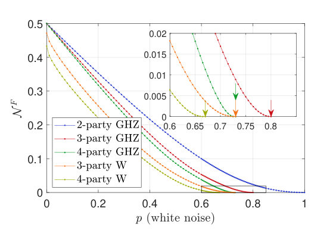
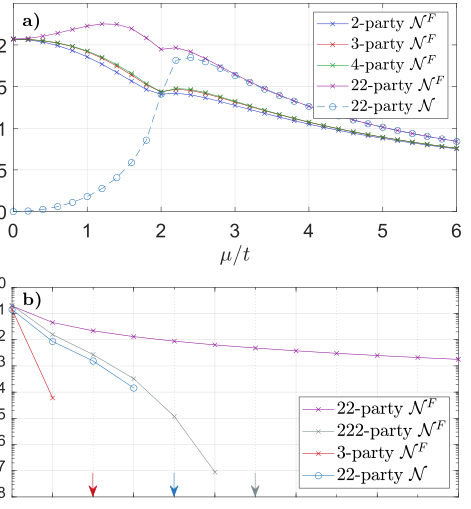
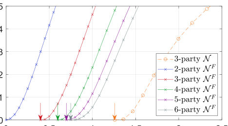

← Index · ← Previous · Next →
Authors: Adrián Roig, Miguel A. Muñoz, Guillermo B. Morales
Type: theory · Category: disordered systems and neural networks · PDF: https://arxiv.org/pdf/2607.21232v1
Analysis basis: full PDF text, analyzed in chunks
Topic relevance: 🔥 non-equilibrium universality 4/5 · driven-dissipative phase transition 3/5 · methods for driven-dissipative 3/5 · non-equilibrium dynamics 2/5 · Keldysh / 2PI / non-Gaussian methods 1/5 · correlated / nonlocal dissipation 1/5 · entanglement & information structure 1/5
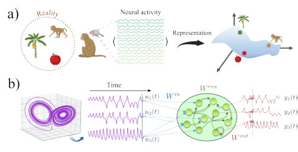
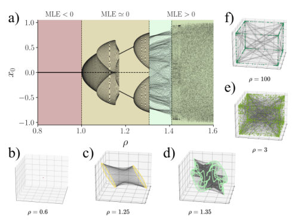
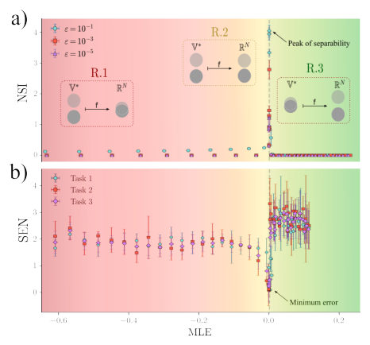
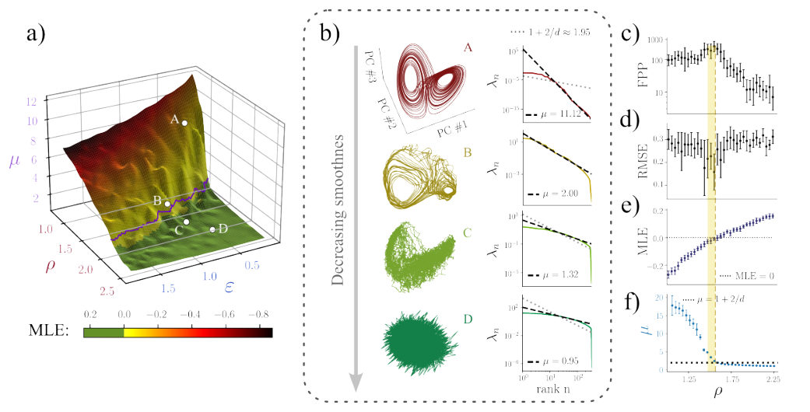
Summary. This work links the concept of universal computation in reservoir networks to the geometric properties of their high-dimensional state representations. By analyzing the system's stability via the Lyapunov exponent, the authors show that optimal performance occurs at a 'marginal driven stability' point. This regime uniquely balances the need for distinct input separation with the requirement for smooth, structured embedding geometry.
Why it may be interesting. The connection drawn between physical concepts like edge-of-instability dynamics (common in non-equilibrium physics) and information processing capacity provides a novel theoretical framework for understanding computation limits in complex dynamical systems, potentially informing models of biological or quantum computation.
Main problem. The paper addresses how enhanced computational capabilities (universality) relate to optimal geometric structure in complex, input-driven recurrent neural networks.
Main result. Optimal performance is achieved in a narrow regime of marginal driven stability ($ ext{MLE} \simeq 0^{-}$), where the network balances local neighborhood separation required for computation and smooth high-dimensional geometry needed for optimal representation.
Method. The authors analyze reservoir computing dynamics by introducing diagnostics like the Neighborhood Separability Index (NSI) and tracking the input-conditioned Maximal Lyapunov Exponent (MLE).
Model / system. The model is Reservoir Computing, where a fixed recurrent network maps time-series inputs into high-dimensional states using a non-linear activation function. The dynamics are governed by parameters like the recurrent gain ($ ho$) and input strength ($\epsilon$).
Key observables. Neighborhood Separability Index (NSI), Input-conditioned Maximal Lyapunov Exponent (MLE), Covariance spectrum exponent ($\mu$), Furthest Predicted Point (FPP), and Root-Mean-Square Error (RMSE).
Important parameters / regimes. The primary control parameter is the reservoir gain $ ho$, which dictates the dynamical regime (contractive, marginal stability, or unstable/mixing).
Assumptions / limitations. The analysis assumes that computational utility requires both local distinguishability (NSP) and global smoothness (Stringer's bound), and these two requirements are optimized simultaneously at marginal driven stability.
Figures summary. Figures illustrate how NSI, prediction error, and the MLE change across different reservoir gain ($ ho$) regimes, pinpointing optimal performance near $ ext{MLE} \simeq 0^{-}$ where spectral properties approach theoretical bounds.
Paper structure. The paper builds by first defining the computational requirements (NSP/Universality) and geometric constraints (Stringer's bound). It then analyzes how varying the reservoir gain ($ ho$) shifts the system through different dynamical regimes, identifying marginal stability as the unique point where both constraints are simultaneously satisfied for optimal performance.
Near-critical dynamics are often linked to enhanced computation, but the underlying mechanism remains unclear. We address this question in reservoir computing, where a fixed recurrent network maps input sequences into high-dimensional states and only a simple readout is trained. We extend fixed-reservoir universality results to discrete-time input-driven reservoirs and connect their key geometric condition, neighborhood separation, to dynamics. To this end, we introduce a finite-resolution neighborhood separability index and an input-conditioned maximal Lyapunov exponent. We find that neighborhood separability, chaotic time-series prediction, and smooth high-dimensional representation geometry are optimized in the same narrow window of marginal driven stability. In this regime, the covariance spectrum approaches the power-law scaling expected for near-optimal smooth representations. Our results link edge-of-instability computation, universality, readout performance, and optimal representation geometry within a common dynamical framework.
Authors: Ayanendu Dutta
Type: both · Category: other · PDF: https://arxiv.org/pdf/2607.21066v1
Analysis basis: full PDF text, analyzed in chunks
Topic relevance: 🔥 entanglement & information structure 4/5 · non-equilibrium dynamics 3/5 · methods for driven-dissipative 2/5 · non-equilibrium universality 2/5 · Keldysh / 2PI / non-Gaussian methods 1/5 · correlated / nonlocal dissipation 1/5 · driven-dissipative phase transition 1/5 · scars & prethermalization 1/5
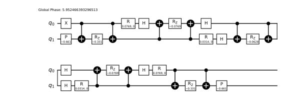
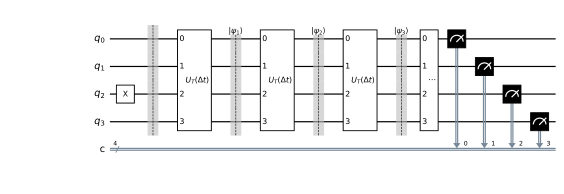
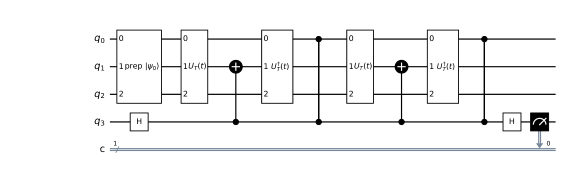
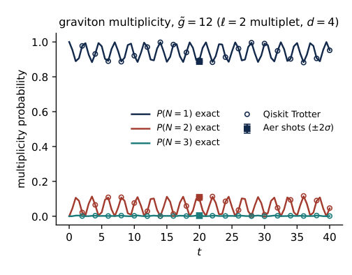
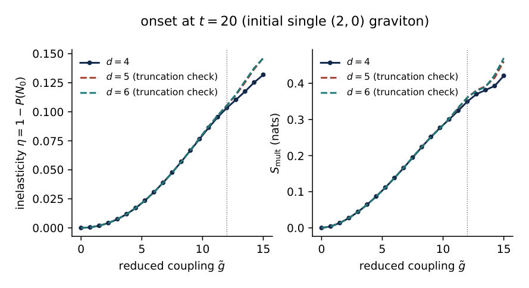
Summary. This paper analyzes the cubic self-interaction of gravitons near a black hole horizon by deriving an effective Hamiltonian and simulating its time evolution. The authors prove that certain components of this interaction vanish at leading soft order while using quantum simulation techniques to measure entanglement and spectral properties. The work highlights the challenges in distinguishing true physical dynamics from finite-size artifacts in complex quantum systems.
Why it may be interesting. It provides a concrete, albeit highly specialized, example of applying advanced quantum information tools (entanglement measures, spectral analysis) to fundamental gravitational physics problems concerning black hole evaporation and scrambling.
Main problem. The study derives and simulates the leading-soft cubic graviton self-interaction vertex on a black hole horizon to test predictions about quantum dynamics, thermalization, and entanglement.
Main result. A vanishing theorem proves that the self-coupling of purely traceless longitudinal polarizations is zero at leading soft order; simulations confirm perturbative rigidity but suggest Page-like behavior requires mechanisms beyond this cubic vertex.
Method. The work combines analytical derivation using the GGV near-horizon framework with numerical simulation of the resulting Hamiltonian on quantum hardware simulators (IBM Qiskit/Aer).
Model / system. The system is a gravitational field perturbation expanding the Einstein-Hilbert action to cubic order around a Schwarzschild black hole horizon. The dynamics are governed by an effective Hamiltonian derived from this self-interaction vertex.
Key observables. Inelasticity ($\eta$), entanglement profiles (compared to Haar/Page reference), residual dressing ($d_{ ext{eff}}$), and spectral statistics (IHO vs. Wigner/Poisson).
Important parameters / regimes. Leading soft order, $\ell=2$ multiplet, coupling strength ($ ilde{g}$), and system size/cutoff ($N_{\max}$).
Assumptions / limitations. The vanishing theorem is framework-specific (RW gauge, GGV sector); simulations are subject to systematic errors from truncation and finite Hilbert space size.
Figures summary. Figures illustrate the oscillatory growth of inelasticity ($\eta$), entanglement profiles below the Page value, spectral form factors comparing integrable vs. random matrix predictions, and multi-scalar yield comparisons.
Paper structure. The paper proceeds by deriving the cubic vertex analytically (establishing the vanishing theorem), then simulating the resulting dynamics using quantum circuits to measure observables like entanglement and inelasticity, concluding with a discussion of limitations regarding system size and thermalization mechanisms.
We expand the Einstein-Hilbert action to cubic order about the Schwarzschild horizon, in the even Regge-Wheeler gauge of the Gaddam-Groenenboom-'t~Hooft (GGV) near-horizon framework, and derive the cubic graviton self-interaction. Our central result is a vanishing theorem': at leading soft order the self-coupling of the purely traceless longitudinal polarizations is identically zero, because with the trace/transverse-scalar sector switched off the fluctuation reduces to a two-dimensional block whose $\sqrt{-g}\,R$ is a total (Euler) derivative at every order in $κ$. We prove this by an explicit closed-form reduction and exhibit the cancellation term by term. It is aframework-specific' statement, even RW gauge, GGV sector, leading soft order, not a gauge-invariant theorem of general relativity. The theorem is exact, but the quantized vertex inherits a $\sim\!20\%$ soft/scheme systematic at the only simulable multiplet ($\ell=2$), which we state explicitly. We then simulate the real-time dynamics of the resulting Hamiltonian on IBM Qiskit/Aer with exact cross-checks. Two structural facts, a conserved charge that only the cubic vertex violates, opening $φφ\to hh\to4φ$, and a provably resonance-free boost spectrum (gap $\to1/2$), already predict that the longitudinal channel is perturbatively rigid; the simulation confirms this quantitatively and measures the residual dressing ($d_{\rm eff}=1.06$; multiplicity far from thermal, Poisson, and Haar references) rather than discovering it. A symmetry-exact total-occupation truncation yields the first sector-resolved level statistics, indicative of intermediate behaviour on Hilbert spaces too small to be decisive. All circuit results agree with exact diagonalization, every headline number carries a stated systematic, and hardware execution is deferred behind a quantified noise budget.
Authors: Johannes S. Hofmann, Patrick Ledwith, Ashvin Vishwanath, Jong Yeon Lee, Erez Berg
Type: theory · Category: strongly correlated electrons · PDF: https://arxiv.org/pdf/2607.20619v1
Analysis basis: full PDF text, analyzed in chunks
Topic relevance: 🔥 analog quantum simulation 4/5 · Keldysh / 2PI / non-Gaussian methods 3/5 · driven-dissipative phase transition 2/5 · Kondo & dissipative impurity 1/5 · entanglement & information structure 1/5 · methods for driven-dissipative 1/5 · non-equilibrium dynamics 1/5
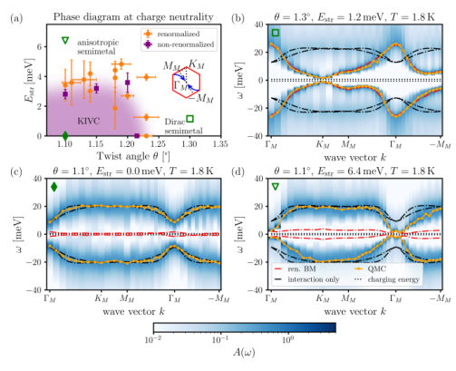
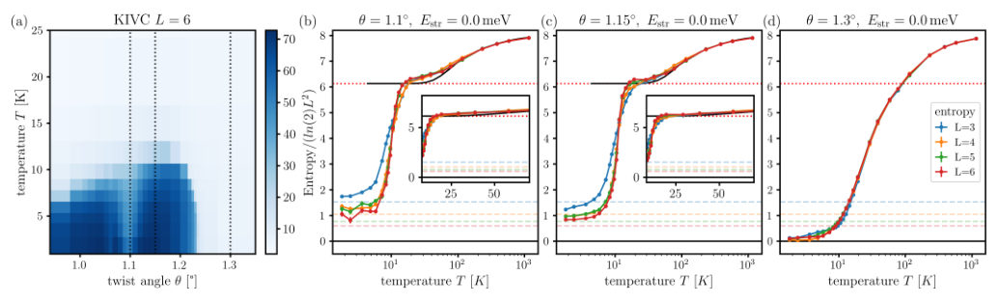
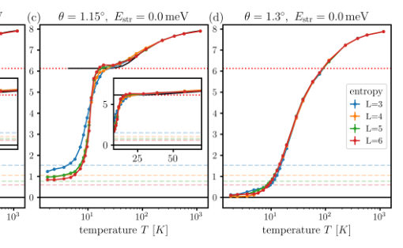
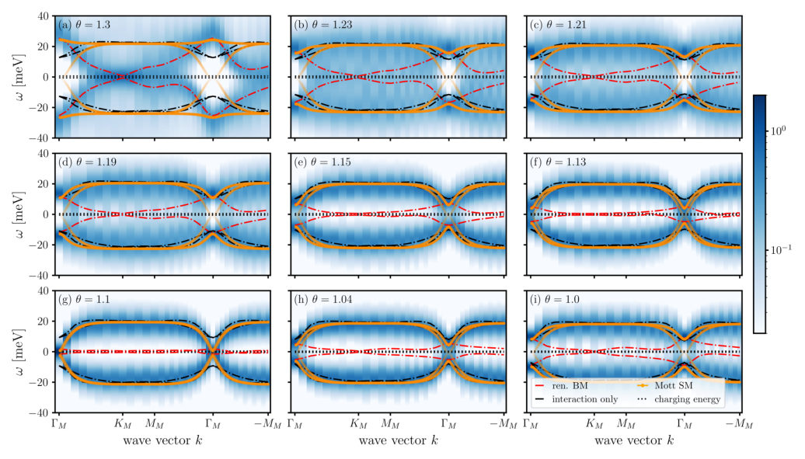
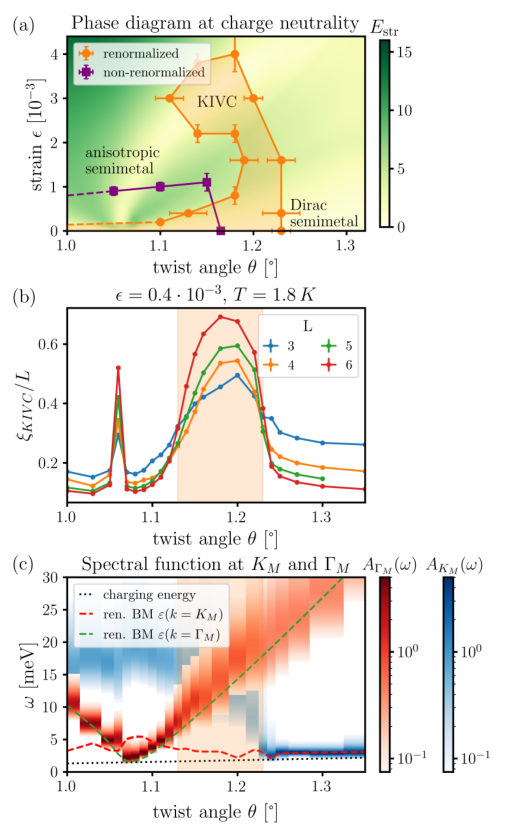
Summary. This work uses advanced Quantum Monte Carlo simulations to map the phase diagram of twisted bilayer graphene under strain and temperature. It identifies distinct correlated states—including KIVC and anisotropic semimetals—by analyzing spectral functions and entropy plateaus. The findings advance the understanding of how geometric parameters control emergent electronic behavior in 2D materials.
Why it may be interesting. The study provides a detailed theoretical framework for understanding emergent electronic phases in moiré materials, which are highly relevant platforms for simulating strongly correlated physics analogous to high-Tc superconductors.
Main problem. The study investigates the complex phase diagram of twisted bilayer graphene (TBG) at charge neutrality as a function of twist angle, uniaxial strain, and temperature.
Main result. The system exhibits continuous transitions between Dirac semimetal, Kramers inter-valley coherent (KIVC) phases, and anisotropic semimetals, with entropy measurements suggesting localized electron behavior in the KIVC regime.
Method. The research employs sign-problem-free Quantum Monte Carlo simulations and advanced Green's function techniques to calculate self-energies beyond mean-field theory.
Model / system. The system is Twisted Bilayer Graphene (TBG) modeled using a continuum Hamiltonian projected onto narrow moiré bands. Calculations utilize concepts from the Hubbard model and incorporate strain via pseudo gauge potentials.
Key observables. Electron spectral function A(k, omega), entropy S vs T, fermion bilinear order parameters, and self-energy corrections $\Sigma_{k,n}$.
Important parameters / regimes. Twist angle ($ heta$), uniaxial heterostrain ($\varepsilon$), Temperature ($T$), and interaction strength ($U$). Key regimes include $T=0$ and intermediate temperatures ($15 ext{ K} \lesssim T \lesssim 40 ext{ K}$).
Assumptions / limitations. The simulations rely on approximating the system to be sign-problem free via particle-hole symmetry, and calculations often involve small parameter expansions (e.g., $s^2 \ll 1$ or $T \gg U s_2$).
Figures summary. Figures illustrate phase boundaries between different semimetallic phases, show the evolution of the spectral function across these phases, and plot entropy versus temperature to diagnose electronic regimes.
Paper structure. The paper systematically maps out the phase diagram by varying $ heta$ and $\varepsilon$, using multiple diagnostic tools like spectroscopy (spectral function) and thermodynamics (entropy) to characterize transitions between distinct correlated states.
We study the phase diagram of twisted bilayer graphene at charge neutrality as a function of twist angle $θ$, uniaxial heterostrain $\varepsilon$, and temperature $T$ using sign-problem-free quantum Monte Carlo simulations. At $T=0$ and zero strain, we find a continuous transition from a Dirac semimetal to a gapped Kramers inter-valley coherent (KIVC) phase as $θ$ decreases toward the magic angle. With finite strain, the KIVC phase undergoes a further continuous transition at smaller $θ$ into an anisotropic semimetal with gapless excitations near the center of the moiré Brillouin zone. In the KIVC regime, the entropy rises sharply with temperature and plateaus at $15\,\text{K} \lesssim T \lesssim 40\,\text{K}$ near the value expected from a Mott-like regime of localized electrons with nearly uncorrelated spin, valley, and orbital degrees of freedom, despite the topological obstruction preventing a localized tight-binding description of the active bands. The spectral function evolves continuously with $θ$: at low $T$, a gap opens at the $K$ points and the minimal gap shifts to $Γ$ as $θ$ decreases; at intermediate $T$, the spectral function smoothly interpolates between a Dirac semimetal spectrum with coherent $K$-point quasiparticles and a spectrum with gapless $Γ$-centered quasiparticles near the magic angle. The later can be a anisotropic or a Mott semimetal and we discuss how to distiguish them in experiment.
Authors: Alessandro Laneve, Fabrizio Cienzo, Santiago Gomez, Paolo Barigelli, Philip Menz, Mattia Beccaceci, Giuseppe Ronco, Giorgia Grossi, Ievgen Brytavskyi, Thomas Oberleitner, Markus Wiener, Christian Weidinger, Tobias M. Krieger, Ailton Garcia, Saimon Filipe Covre da Silva, Michele B. Rota, Nicolò Spagnolo, Henning Weier, Fabio Sciarrino, Armando Rastelli, Rinaldo Trotta
Type: experiment · Category: quantum information and computing · PDF: https://arxiv.org/pdf/2607.21093v1
Analysis basis: full PDF text, analyzed in chunks
Topic relevance: 🔥 QC/QI experiment 4/5 · quantum optics experiment 3/5 · entanglement & information structure 2/5 · free-space correlated emission 1/5 · interference shaping light 1/5 · non-equilibrium dynamics 1/5
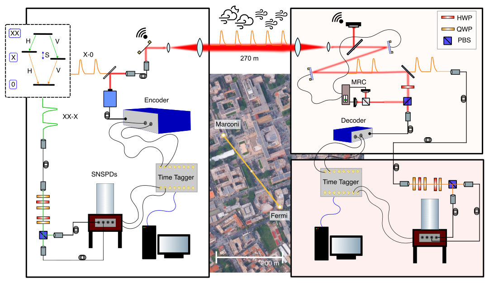
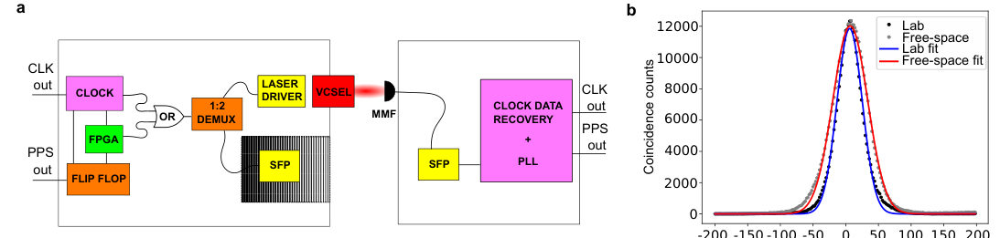
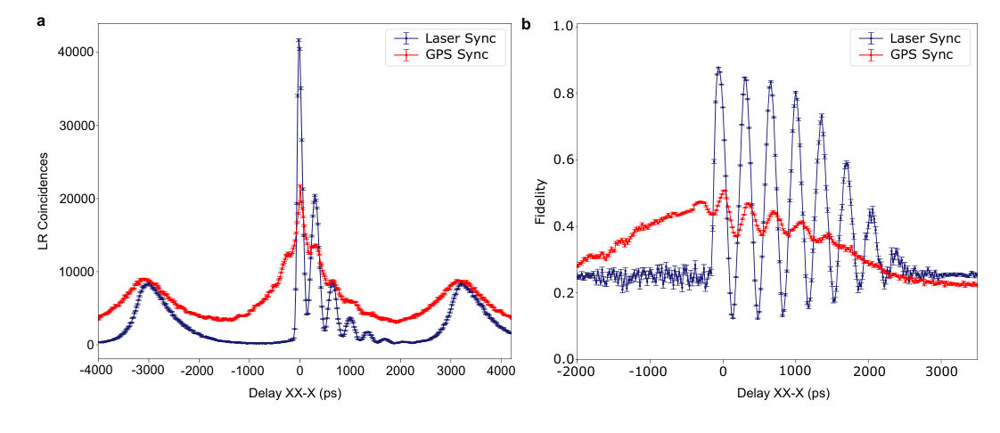
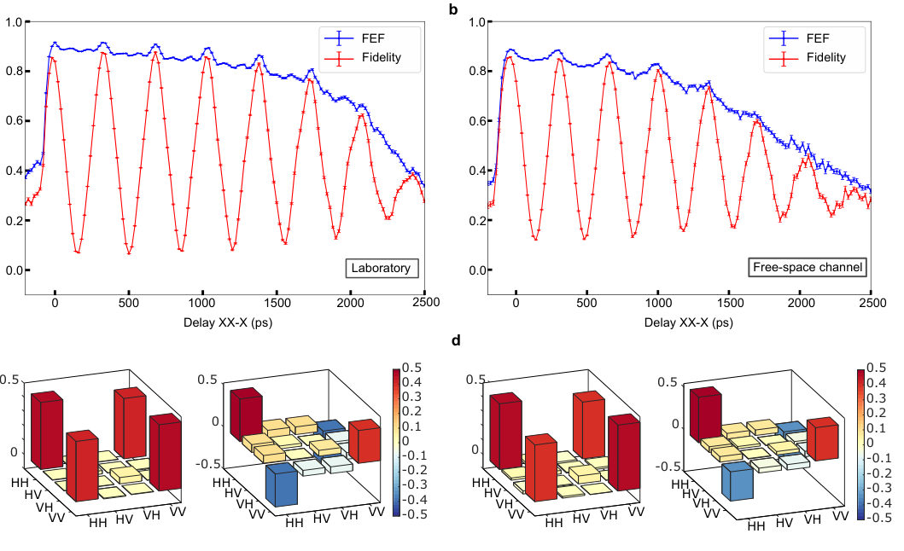
Summary. The research demonstrates the reliable transmission of time-evolving entangled states over a challenging 270 m urban free-space channel. By implementing a high-precision synchronization system achieving sub-50 ps jitter, the authors maintained high entanglement fidelity and even benchmarked secure key generation rates. This work establishes a crucial experimental milestone for long-distance quantum communication.
Why it may be interesting. This work directly addresses the critical engineering bottleneck—timing stability—for scaling quantum communication from controlled lab environments to real-world, noisy free-space links, which is fundamental for future quantum networks.
Main problem. The primary goal was to demonstrate the faithful distribution of fast-evolving entangled quantum states over a noisy, long-distance free-space optical channel.
Main result. The authors successfully transmitted time-evolving entanglement across 270 m in an urban setting, achieving high fidelity (up to 89% FEF) by implementing advanced synchronization techniques.
Method. The experiment utilized a quantum dot source generating entangled photon pairs and incorporated a novel laser-based synchronization device to maintain sub-50 ps timing accuracy over the free-space link.
Model / system. The system uses an entangled two-photon state generated via biexciton-exciton cascades in a Quantum Dot (QD) source. The transmission channel is a 270 m free-space link connecting buildings in Rome, requiring precise time synchronization for measurement.
Key observables. Time-resolved degree of entanglement (FEF), fidelity to the target state $|\phi^+ angle$, and Secure Key Fraction (SKF) for QKD benchmarking.
Important parameters / regimes. Sub-50 ps timing jitter, 270 m channel distance, oscillation periods on hundreds of picoseconds.
Assumptions / limitations. The analysis assumes that time-wise post-selection is necessary to mitigate noise and maintain quantum correlations over the noisy link; the protocol relies heavily on low temporal jitter between remote parties.
Figures summary. Figures illustrate the setup scheme, the synchronization device components, and quantitative comparisons of entanglement fidelity (FEF) achieved in both laboratory settings versus the free-space channel.
Paper structure. The paper details the physical system (QD source), introduces the challenge of timing over noisy channels, presents the novel synchronization method, validates the transmission of time-evolving entanglement via high FEF measurements, and finally benchmarks its potential for secure quantum key distribution.
Time-evolving entangled states describe quantum particles whose correlations evolve in time according to a well-defined dynamics. Such states can be generated in a variety of physical systems and are promising resources for several quantum technologies, ranging from quantum clock synchronization to quantum communication. However, their full potential is currently limited by the fact that the entanglement dynamics often occur on timescales comparable to the achievable synchronization precision, especially in experiments aimed at distributing entanglement through noisy urban channels. In this context, accurate timing is not merely a technical detail, but a fundamental requirement for faithfully observing and exploiting the underlying quantum correlations. Here, we demonstrate the faithful distribution of a fast-evolving entangled state over a 270 m free-space channel connecting two buildings in the center of Rome. The developed system incorporates a synchronization device capable of achieving sub-50 ps timing accuracy between the two ends of the link while simultaneously supporting channel stabilization. Our results demonstrate that time-evolving entanglement can be reliably transmitted through a noisy urban free-space channel, representing an important benchmark toward long-distance free-space quantum communication and the future implementation of time-correlated entangled states in demanding scenarios such as satellite-based quantum networks.
Authors: James Allen, Liuke Lyu, William Witczak-Krempa
Type: theory · Category: strongly correlated electrons · PDF: https://arxiv.org/pdf/2607.20707v1
Analysis basis: full PDF text, analyzed in chunks
Topic relevance: 🔥 entanglement & information structure 4/5 · analog quantum simulation 3/5 · Keldysh / 2PI / non-Gaussian methods 1/5 · correlated / nonlocal dissipation 1/5 · driven-dissipative phase transition 1/5 · methods for driven-dissipative 1/5



Summary. This paper introduces the fermion genuine multiparty negativity (fGMN), a novel and computable measure designed to quantify multipartite entanglement specifically within fermionic quantum systems. By reformulating existing concepts using a specialized partial transpose, the authors establish fGMN as an entanglement monotone that reveals unique physical phenomena, such as sudden death points, distinguishing it from simpler bipartite measures.
Why it may be interesting. The development of rigorous entanglement measures applicable to fermions is crucial for understanding quantum correlations in condensed matter systems where fermionic statistics dominate. The identification of distinct physical signatures (like sudden death) provides testable predictions for experimental realization.
Main problem. The primary goal is to develop a computable measure for Genuine Multiparty Entanglement (GME) specifically tailored for fermionic quantum systems, as existing measures are insufficient.
Main result. The authors introduce the fermion genuine multiparty negativity (fGMN), an efficiently computable entanglement monotone that exhibits distinct physical behaviors compared to bipartite fermionic negativity.
Method. The measure is derived by modifying the standard Genuine Multiparty Negativity using a specialized 'fermionic partial transpose' ($ ext{QR}_m$) and formulated as a Semi-Definite Programming (SDP) optimization problem.
Model / system. The analysis focuses on general fermionic quantum systems, including specific examples like fermionic stabilizer states and white noise mixed states. The formalism is built around the constraints imposed by fermionic anti-commutation relations.
Key observables. Fermion Genuine Multiparty Negativity (fGMN), bipartite fermionic negativity ($N( ho)$), and sudden death points over separation or temperature.
Important parameters / regimes. The white noise mixing strength ($p$), the number of parties, and constraints derived from the fermionic partial transpose ($ ext{QR}_m$).
Assumptions / limitations. The derivation relies on relaxing the Hermitian condition during the witness formulation and assuming that the minimum value can be determined by analyzing specific projector components (e.g., $\vec{u}=0$ case).
Figures summary. Figures illustrate eigenvalue regions for witness components in fermionic vs. non-fermionic cases, and plot $N_F$ versus noise strength ($p$) showing sudden death points for GHZ and W states.
Paper structure. The paper progresses by first establishing the need for a fermionic GME measure, defining fGMN via SDP, proving its desirable properties (monotonicity, reduction to bipartite case), deriving the dual SDP formulation, and finally simplifying the result to show equivalence with minimum bipartite negativity across all partitions.
Entanglement can show fundamentally different behavior in fermionic systems. However, while bipartite measures of fermionic entanglement have been established, genuine multiparty entanglement (GME) in fermionic systems is much less understood. We introduce an efficiently computable measure (via semi-definite programming) of fermionic GME, fermion genuine multiparty negativity (fGMN), and show that it is an entanglement monotone and a natural multipartite extension of the fermionic negativity. Using this measure, we find many states which have fGMN but no non-fermionic GME, including large classes of fermionic stabilizer states. The fGMN also displays some major phenomenological differences to the bipartite fermionic negativity, such as finite sudden death points over separation and temperature.
Authors: Yuan Liu, Linhan Lin, Ke-Mi Xu
Type: theory · Category: quantum information and computing · PDF: https://arxiv.org/pdf/2607.21240v1
Analysis basis: full PDF text, analyzed in chunks
Topic relevance: 🔥 entanglement & information structure 4/5 · non-equilibrium dynamics 2/5 · correlated / nonlocal dissipation 1/5 · driven-dissipative phase transition 1/5 · methods for driven-dissipative 1/5 · non-equilibrium universality 1/5 · quantum measurements 1/5
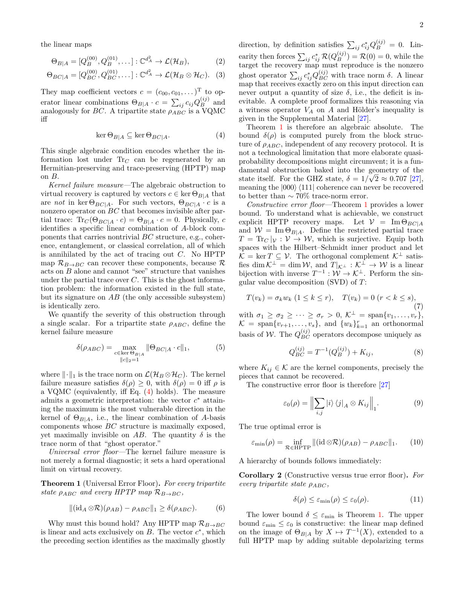
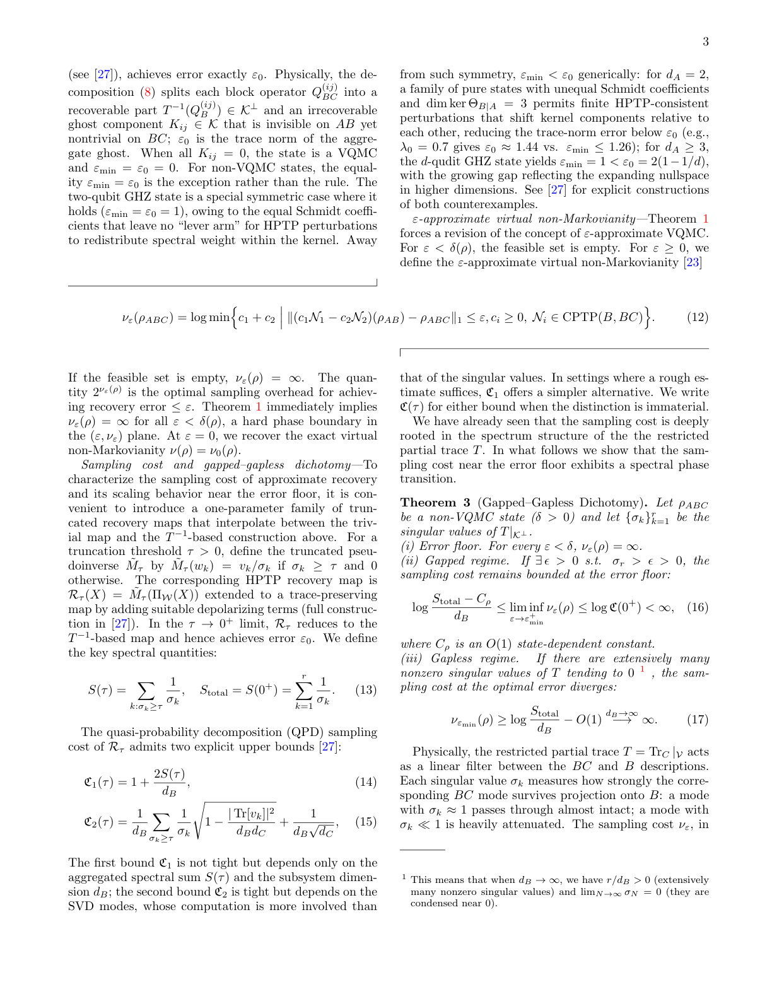
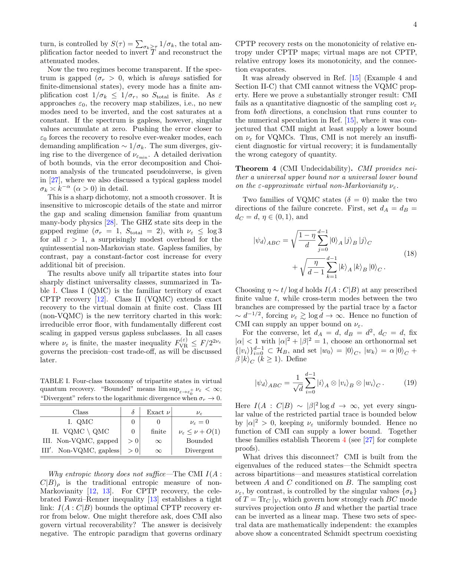
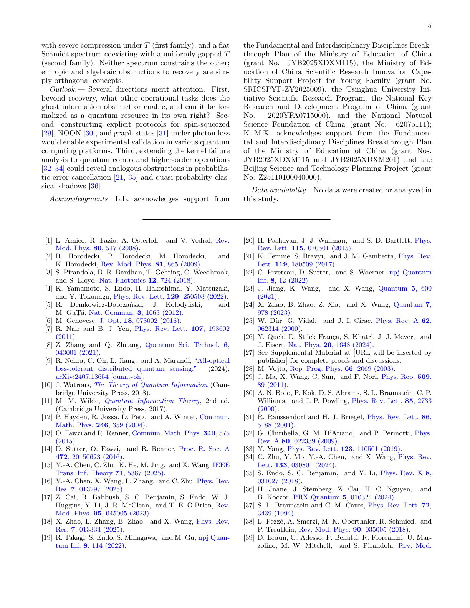
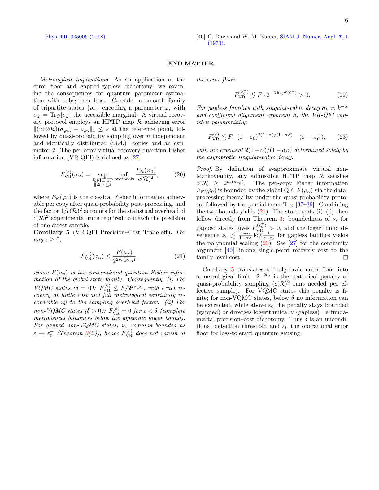
Summary. This work establishes that the inability to recover lost quantum information stems from an algebraic feature called 'ghost information,' quantified by $\delta( ho)$. It proves this value sets a universal error floor independent of resources and demonstrates that standard entropy measures fail to capture this fundamental physical limit. This has direct implications for setting detection thresholds in loss-tolerant quantum metrology.
Why it may be interesting. It provides a rigorous, non-entropic diagnostic tool for characterizing information loss in quantum systems, which is crucial for designing robust protocols in quantum networking or sensing where information leakage occurs.
Main problem. The core problem is determining the fundamental limits on recovering quantum information lost due to subsystem loss, identifying the algebraic source of this irrecoverability.
Main result. The authors identify a scalar measure, $\delta( ho)$, representing 'ghost information,' which establishes a universal error floor below which no recovery strategy can operate. They also show that standard entropic measures like CMI are fundamentally irrelevant to virtual recoverability.
Method. The analysis employs algebraic tools involving block matrices and linear maps acting on coefficient vectors, leading to the definition of kernel failure measures ($\delta( ho)$) and sampling costs ($ u_\epsilon$).
Model / system. The study focuses on tripartite quantum states $ ho_{ABC}$ undergoing partial tracing (subsystem loss), relevant to noisy quantum sensors or lossy quantum networks.
Key observables. Ghost information measure $\delta( ho)$, Universal Error Floor, Sampling Cost ($ u_\epsilon$), Conditional Mutual Information ($I(A:C|B)$).
Important parameters / regimes. Approximation error $\epsilon$, resource investment (implied by cost functions), and the spectral gap of underlying linear maps.
Assumptions / limitations. The analysis relies on establishing rigorous algebraic bounds ($\delta( ho) \le \epsilon_{\min}( ho) \le \epsilon_0( ho)$) that hold irrespective of resource expenditure.
Figures summary. Not specified, but the notes detail a dichotomy in sampling cost scaling based on whether the underlying spectrum is gapped or gapless.
Paper structure. The paper progresses by first defining the algebraic obstruction ($\delta( ho)$), then quantifying the associated recovery costs (sampling cost $ u_\epsilon$), establishing the universal error floor, and finally contrasting this physical measure against insufficient entropic diagnostics like CMI.
The recovery of quantum information after subsystem loss is a central challenge in quantum information processing. However, some states remain beyond the reach of any recovery strategies. Here we identify the algebraic origin of irrecoverability, the ghost information---correlations encoded in the global state that leave no trace on any accessible subsystem. We introduce a scalar measure quantifying its magnitude and prove a universal error floor below which no virtual recovery map can operate, irrespective of resource investment. We further uncover a spectral phase transition in the sampling cost: bounded when the underlying linear map exhibits a spectrum gap, and divergent with a universal exponent in the gapless regime. Together with the universal error floor, this dichotomy organizes all multipartite quantum states into four classes. Moreover, it is revealed that conditional mutual information---the standard entropic diagnostic---is fundamentally irrelevant to virtual recoverability. As an implication, we show that the error floor imposes a detection threshold for loss-tolerant quantum metrology.
Authors: Ren-De Liu, Jie Wang, Dong-Dong Li, Xian-Chang Du, Dao-Zhong Xiao, shuai Li, Chuan-Yang Ding, Yan-Lin Tang, Yang Li, Sheng-Kai Liao, Teng-Yun Chen, Shi-Biao Tang
Type: experiment · Category: quantum information and computing · PDF: https://arxiv.org/pdf/2607.20987v1
Analysis basis: full PDF text, analyzed in chunks
Topic relevance: 🔥 QC/QI experiment 4/5 · quantum measurements 3/5 · quantum optics experiment 2/5 · measurement-induced transitions 1/5
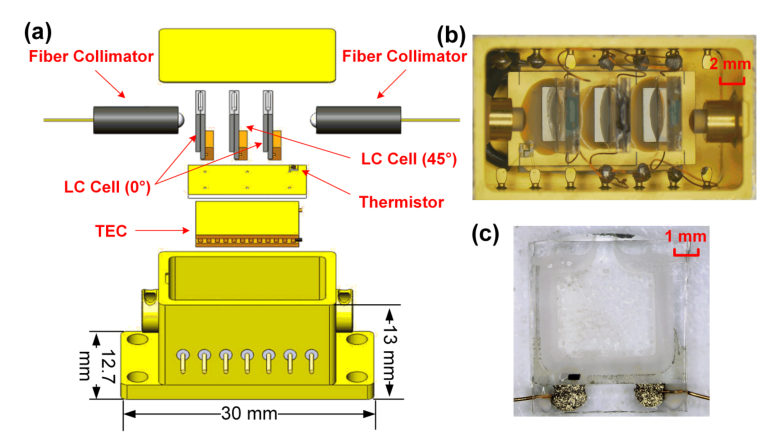
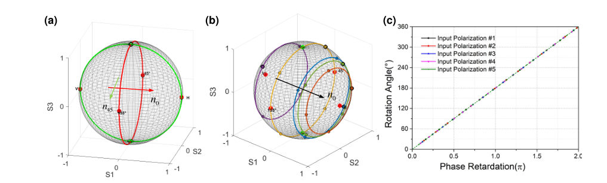
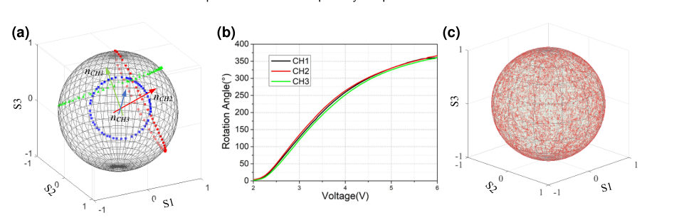
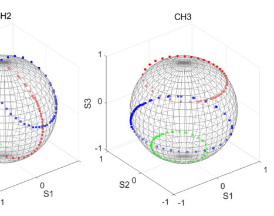
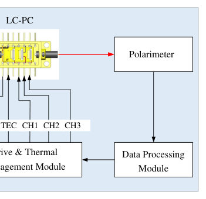
Summary. The paper presents a novel, compact liquid-crystal polarization controller designed to manage polarization states in photonic systems. It introduces a unique control algorithm that calculates the necessary voltage settings using only one initial state measurement. This combination offers a practical, low-loss solution for high-precision polarization management critical for quantum key distribution and optical sensing.
Why it may be interesting. This work directly addresses hardware implementation challenges for quantum communication protocols (like QKD) by providing a low-loss, compact component that simplifies complex polarization management into a single measurement step.
Main problem. Existing polarization controllers suffer from performance trade-offs, requiring complex calibration or multiple state measurements.
Main result. The authors developed a compact liquid-crystal controller with a single-measurement direct-calculation algorithm achieving high accuracy and low loss.
Method. A geometric rotation synthesis approach is used to calculate required voltages directly from the initial State of Polarization (SOP) measurement, bypassing iterative optimization.
Model / system. The system is a compact liquid-crystal polarization controller (LC-PC) implemented in a butterfly package. It models the LC cell as a voltage-controlled linear retarder whose transformation matrix governs polarization changes on the Poincaré sphere.
Key observables. Insertion loss (<1 dB), driving voltage (<6 V), angular error (<2°), and full Poincaré sphere coverage.
Important parameters / regimes. LC cell gap ($10 \mu ext{m}$), operating wavelength ($\lambda$), and the deterministic nature of SOP-independent trajectory normal vectors.
Assumptions / limitations. The control relies on the highly predictable, SOP-independent polarization modulation characteristic of the LC-PC structure.
Figures summary. Figures illustrate the structural layout, Poincaré sphere trajectories for various input SOPs, and schematics detailing the geometric decomposition used in the single-measurement control algorithm.
Paper structure. The paper first identifies limitations in existing PCs, proposes the deterministic LC-PC, details the mathematical model and the novel single-measurement direct-calculation algorithm, validates performance through experimental measurements on the Poincaré sphere, and concludes with its application potential in QKD.
Polarization controllers (PCs) and their control algorithms are critical for compensating environmental disturbances and maintaining signal fidelity in polarization-sensitive photonic systems. However, existing controllers often involve trade-offs among key performance metrics, while associated control algorithms either converge inefficiently or require multiple state-of-polarization (SOP) measurements. This work presents a compact deterministic liquid-crystal polarization controller (LC-PC) with balanced overall performance, featuring low insertion loss (<1 dB), low driving voltage (<6 V), and full Poincaré sphere coverage. The device exhibits highly predictable and repeatable polarization modulation characterized by SOP-independent trajectory normal vectors, enabling a single-measurement direct-calculation algorithm with an angular error below 2°. The combination of this compact deterministic LC-PC and its efficient control scheme provides a practical solution for polarization management in quantum key distribution, optical sensing, and advanced photonic systems.
Authors: Wentao Wang, Yaoshun Sun, Liyuan Wang, Lingrui Hu, Dajun Ding, Xiangyu Tang, Mingxuan Li, Jianmin Yuan, Sizuo Luo
Type: both · Category: other · PDF: https://arxiv.org/pdf/2607.20941v1
Analysis basis: full PDF text, analyzed in chunks
Topic relevance: 🔥 quantum optics experiment 4/5 · interference shaping light 3/5 · driven-dissipative phase transition 1/5 · methods for driven-dissipative 1/5 · non-equilibrium dynamics 1/5
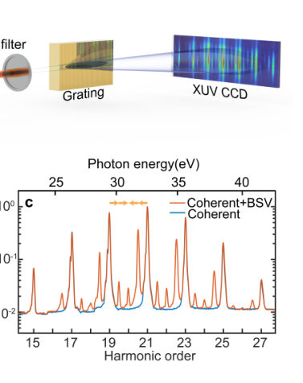

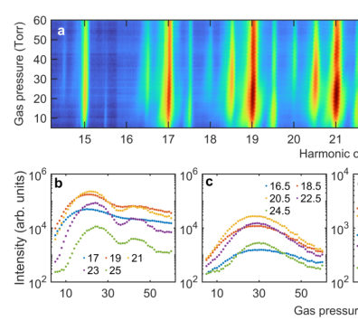
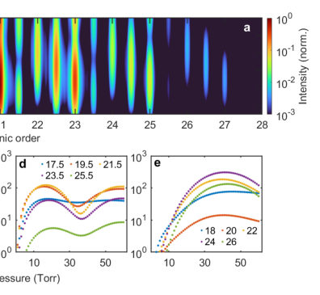
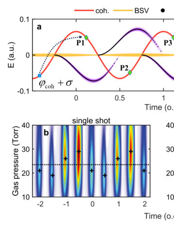
Summary. This paper explores generating bright quantum high-order harmonics by combining intense coherent lasers with weak squeezed vacuum light interacting with atomic gas. The key finding is that the BSV field introduces unique spectral components and perturbs the phase matching condition based on gas pressure. This capability paves the way for advanced attosecond quantum spectroscopy.
Why it may be interesting. This work is highly relevant to quantum optics and open quantum systems as it demonstrates how non-classical light sources (BSV) can be used to engineer and control fundamental nonlinear processes like HHG in a medium, moving beyond standard coherent driving assumptions.
Main problem. The study investigates the macroscopic propagation effects of quantum high-order harmonics (QHHG) generated by combining strong coherent laser light with weak bright squeezed vacuum (BSV) light interacting with atomic gas.
Main result. The inclusion of BSV light generates novel spectral features (half-integer and even harmonics) whose optimal generation pressures differ significantly from those driven by coherent light alone, allowing for quantum control over XUV sources.
Method. The research combines experimental measurements using an XUV spectrometer with theoretical simulations employing a wave-mixing model to account for macroscopic propagation effects.
Model / system. The system involves HHG in Krypton gas driven by a two-color field: a strong coherent laser (800 nm) and a weak BSV field (1600 nm). The theory models the phase mismatch perturbation caused by the action phase shift induced by the BSV light.
Key observables. Harmonic spectra ($ ext{H}{2N+1}$, $ ext{H}$), gas pressure dependence of harmonic intensity, and the second-order correlation function $g_2(0)$.}$, $ ext{H}_{2N
Important parameters / regimes. Gas pressure (5 to 60 Torr); BSV quantum statistics ($g_2(0) = 2.324$); relative intensities of different harmonic components.
Assumptions / limitations. The theoretical model assumes that the macroscopic propagation can be analyzed by incorporating the perturbation from the weak BSV field into the phase-matching condition.
Figures summary. Figures illustrate schematic setups, pressure dependence of various harmonic components showing distinct optimal pressures, and simulated spectra validating the theory against experiment.
Paper structure. The paper progresses by establishing the physical system (coherent + BSV driving), detailing the theoretical framework (wave-mixing model, action phase perturbation), presenting experimental results on spectral features vs. pressure, and concluding with the implications for quantum spectroscopy.
Attosecond quantum light, formed by the superposition of high-order harmonics driven by intense quantum light, opens new routes to probe quantum-mechanical correlations in matter. In this study, we have investigated the macroscopic propagation effects of quantum high-order harmonics generated by the combination of strong coherent and weak bright squeezed vacuum (BSV) lasers interacting with atomic gas. Our results reveal that the pressure-dependent intensity of harmonics arising from absorbing or emitting BSV photons differs from that of harmonics generated using only strong coherent pulses. Macroscopic propagation simulations indicate that the action phase of harmonics is perturbed by the weak BSV pulses. This perturbation modulates the phase mismatch of sub-cycle attosecond bursts and affects their quantum properties when the gas pressure varies. The ability to generate bright quantum high-order harmonics lays a foundation for the establishment and application of attosecond quantum spectroscopy.
Authors: Alfredo Luis
Type: theory · Category: other · PDF: https://arxiv.org/pdf/2607.21100v1
Analysis basis: full PDF text, analyzed in chunks
Topic relevance: 🔥 quantum measurements 4/5 · measurement-induced transitions 3/5 · Keldysh / 2PI / non-Gaussian methods 1/5 · correlated / nonlocal dissipation 1/5
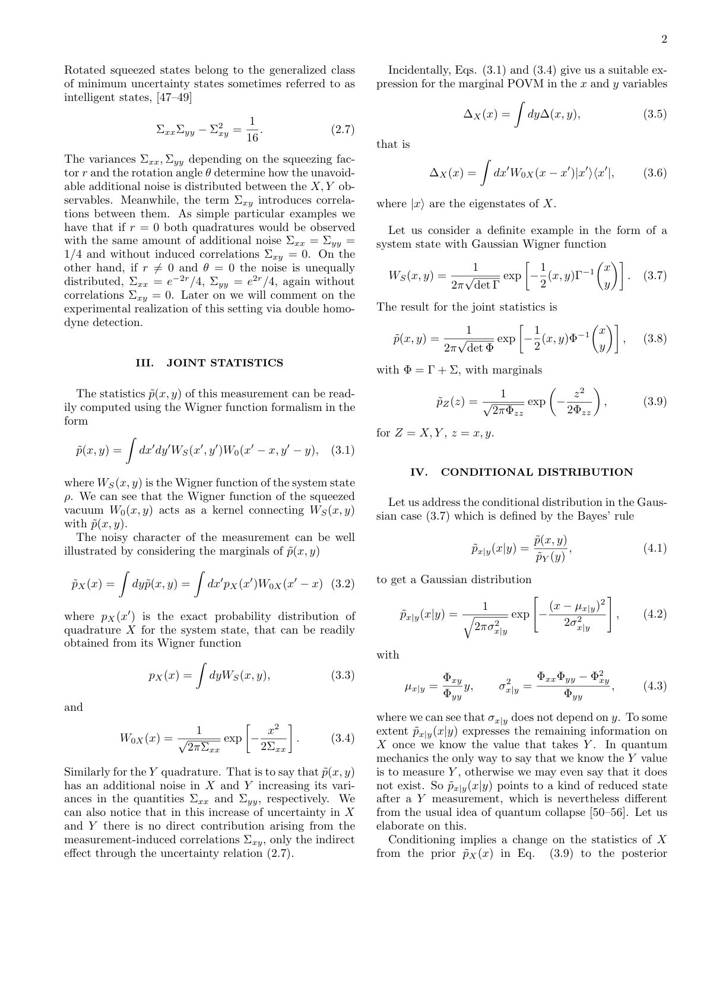
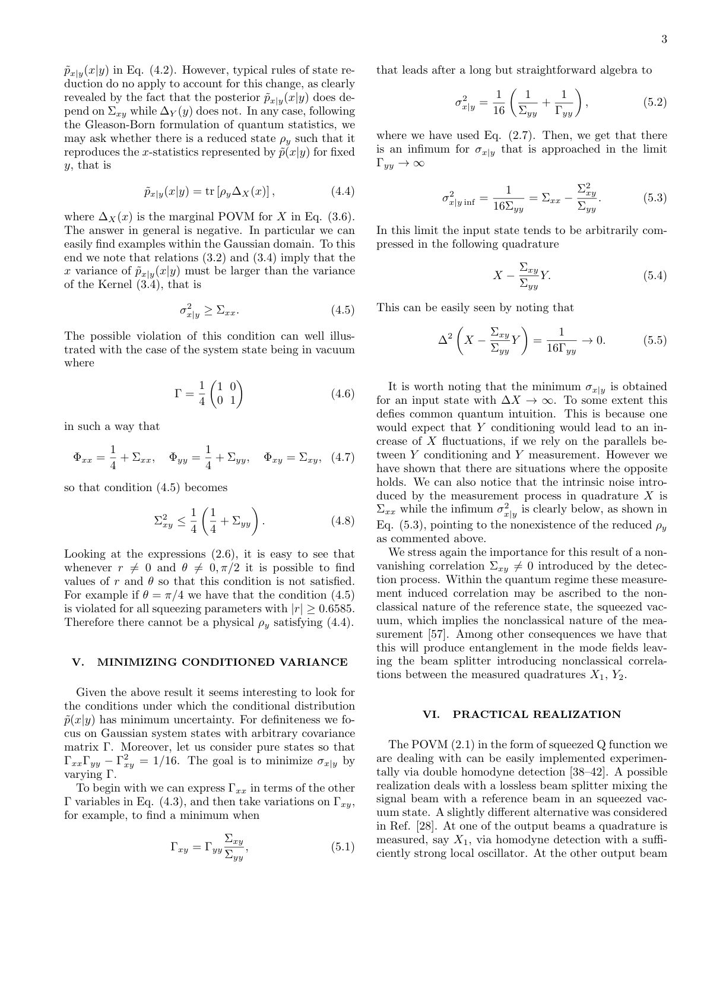
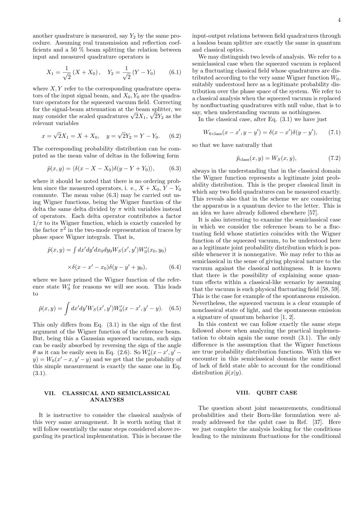
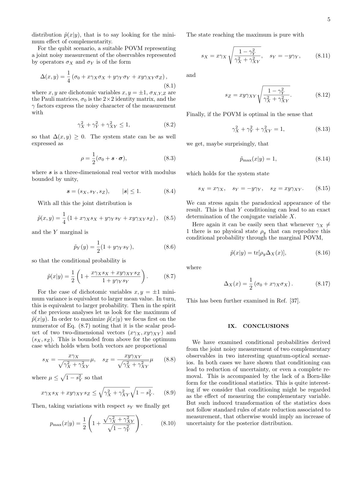
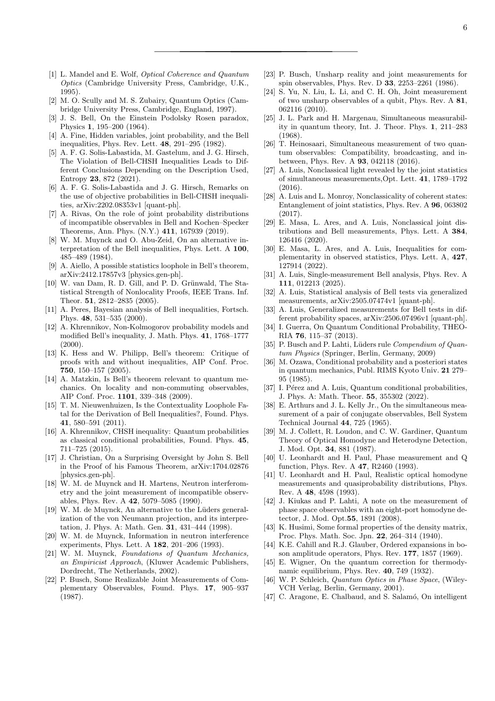
Summary. This paper examines how conditional probabilities are generated when performing joint noisy measurements on complementary observables in quantum optics. It demonstrates that while conditioning can drastically reduce uncertainty, the resulting statistics do not generally conform to standard rules of state reduction or Born formalism. This challenges fundamental assumptions about measurement theory in quantum systems.
Why it may be interesting. This work directly addresses foundational issues in quantum measurement theory and contextuality within the framework of continuous variable quantum optics, which is highly relevant to AMO physics and open quantum systems.
Main problem. The paper investigates conditional probabilities derived from joint noisy measurements of complementary observables, questioning whether these statistics adhere to standard quantum mechanical rules like Born form or typical state reduction.
Main result. The derived conditional probability distribution cannot, in general, be represented by a reduced state using the marginal POVM, indicating that the measurement process induces transformations not covered by standard state reduction rules.
Method. The analysis uses Wigner function formalisms and Bayes' rule for Gaussian cases to calculate joint and conditional probabilities ($ ilde{p}(x|y)$) in quantum-optical settings.
Model / system. Two primary quantum-optical schemes are analyzed: double homodyne detection (measuring quadratures $X$ and $Y$) and a qubit measurement using Pauli observables. The input state is often modeled as a squeezed vacuum state.
Key observables. Quadrature operators ($X, Y$), conditional variance ($\sigma_{x|y}$), and the joint probability distribution $ ilde{p}(x, y)$.
Important parameters / regimes. Squeezing factor ($r$), rotation angle ($ heta$), and measurement noise parameters ($\gamma$).
Assumptions / limitations. The explicit calculations rely on assuming Gaussian system states for simplification in later sections.
Figures summary. Not specified by the notes, but the analysis involves comparing joint quantum statistics $ ilde{p}(x, y)$ with classical/semiclassical limits and demonstrating violations of uncertainty relations ($\sigma_{x|y} \ge \Sigma_{xx}$).
Paper structure. The paper progresses from defining the joint noisy measurement via a POVM to calculating the resulting joint statistics using Wigner functions. It then analyzes the conditional distribution, culminating in proofs showing its non-reproducibility by standard reduced state formalisms.
We examine conditional probabilities derived from the joint noisy measurement of two complementary observables. We show that conditioning on one variable can lead to reduction of uncertainty in the other one, even completely eliminating uncertainty. We show that the conditional distribution cannot, in general, be represented in Born form using the marginal positive operator valued measure and any physical system state, nor can it be derived from typical rules of state reduction. We examine these issues in two basic quantum-optical schemes. These are double homodyne detection and a qubit measurement.
Authors: Neda Ebrahimian
Type: theory · Category: quantum gases · PDF: https://arxiv.org/pdf/2607.21254v1
Analysis basis: full PDF text, analyzed in chunks
Topic relevance: 🔥 analog quantum simulation 4/5 · Keldysh / 2PI / non-Gaussian methods 3/5 · methods for driven-dissipative 1/5 · non-equilibrium dynamics 1/5
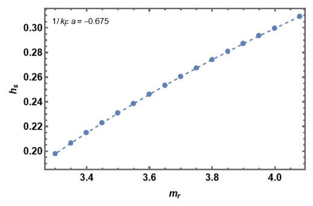
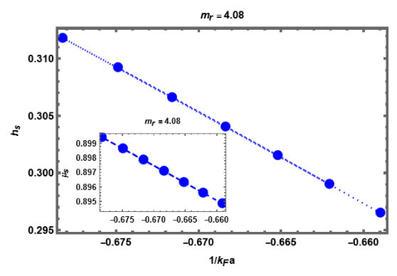
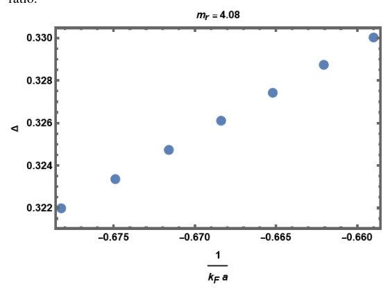
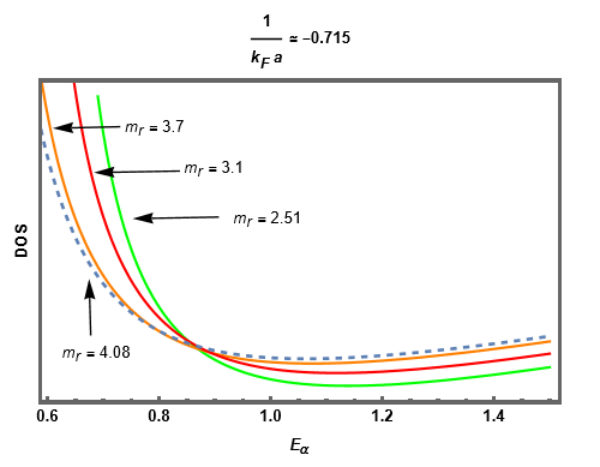
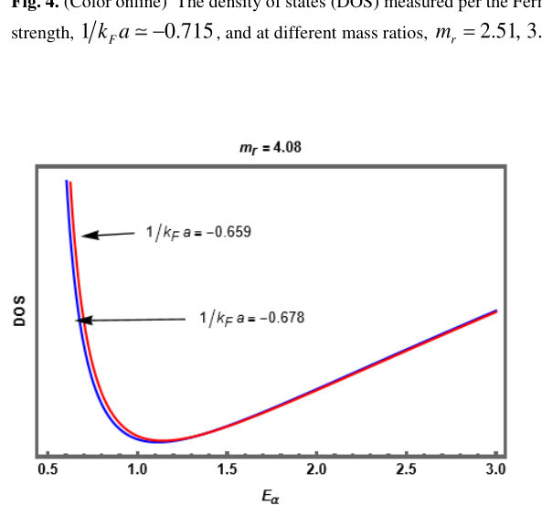
Summary. This theoretical paper analyzes the quasiparticle specific heat in mass-imbalanced two-component Fermi mixtures of ultracold atoms. Using mean-field theory and LDA, it predicts how this thermal signature is governed by interaction strength and the ratio of atomic masses. The results highlight that the specific heat provides a measurable diagnostic tool for understanding mass-asymmetric pairing phenomena.
Why it may be interesting. This work directly addresses complex many-body physics in ultracold atomic systems, providing quantitative predictions (like $c_v$ dependence) that can be compared against future high-precision experimental measurements using trapped gases.
Main problem. The study investigates the quasiparticle specific heat of two-component Fermi mixtures, focusing on the physics of normal-superfluid phase separation in mass-imbalanced ultracold atomic gases.
Main result. The total quasiparticle specific heat increases with increasing mass ratio ($r_m$) and decreases when interaction strength is increased or imbalance chemical potential rises. For Dy-K mixtures, this provides a thermal signature of mass-asymmetric pairing.
Method. The analysis employs mean-field theory within the local density approximation (LDA), utilizing Bogoliubov transformations to diagonalize the effective Hamiltonian in the BCS regime.
Model / system. The system is modeled as a two-component Fermi mixture of ultracold atoms, such as $^{163} ext{Dy}-^{40} ext{K}$, which can undergo phase separation into an unpolarized superfluid core surrounded by a normal component due to mass imbalance.
Key observables. Quasiparticle specific heat ($c_v$), superfluid density of states, average and imbalance chemical potentials ($\mu$, $\mu_{ ext{imbal}}$), and the energy gap ($\Delta$).
Important parameters / regimes. Interaction strength (related to $1/(F_k a)$) and mass ratio ($r_m = m_{\downarrow}/m_{\uparrow}$). The analysis is restricted to regimes where $\mu_{ ext{imbal}} < \Delta$.
Assumptions / limitations. The calculations assume the BCS regime, utilize mean-field theory within LDA, and restrict the imbalance chemical potential below the energy gap to avoid other phases.
Figures summary. Figures illustrate how total specific heat varies with the imbalance chemical potential ($s_h$) or directly with the mass ratio ($r_m$) at fixed temperatures and interaction strengths.
Paper structure. The paper builds context by reviewing superfluidity and phase separation in Fermi gases, then develops the theoretical framework using mean-field theory and LDA. The core analysis focuses on deriving expressions for thermodynamic quantities like specific heat based on the Bogoliubov transformed Hamiltonian.
Ultracold Fermi gases can enter a regime of normal superfluid phase separation, with an unpolarized superfluid component surrounded by a partially polarized normal component. Mass-imbalanced two-component Fermi mixtures on the Bardeen Cooper Schrieffer side of the crossover are studied using mean-field theory within the local density approximation, assuming s-wave pairing induced by a Feshbach resonance and imposing the phase-equilibrium conditions for the phase-separated state. The imbalance chemical potential is chosen to be smaller than the energy gap, so that other possible phases are avoided in the regime considered here. The energy gap and Hartree Fock potentials are obtained self- consistently. The effects of interaction strength and mass ratio on the phase diagram, superfluid density of states, and quasiparticle specific heat are then examined. Within the investigated parameter range, increasing the magnitude of the interaction strength increases the average and imbalance chemical potentials, while reducing the energy gap and the superfluid density of states. The total quasiparticle specific heat decreases with increasing imbalance chemical potential and interaction strength, but increases with mass ratio. Results for the Fermi Fermi mixture of dysprosium and potassium atoms show that the specific heat provides a thermal signature of mass-asymmetric pairing.
Authors: Maksim Litskevich, Kesavan Manivannan, Benjamin Byrd, Pavel D. Kurilovich, Vladislav D. Kurilovich, Gianluigi Catelani, Ivan V. Pechenezhskiy
Type: both · Category: quantum information and computing · PDF: https://arxiv.org/pdf/2607.21329v1
Analysis basis: full PDF text, analyzed in chunks
Topic relevance: 🔥 QC/QI experiment 4/5 · Keldysh / 2PI / non-Gaussian methods 1/5 · correlated / nonlocal dissipation 1/5 · driven-dissipative phase transition 1/5 · methods for driven-dissipative 1/5
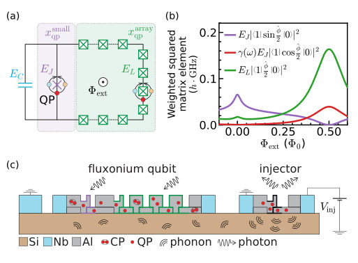
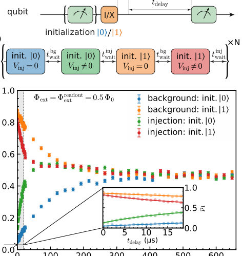
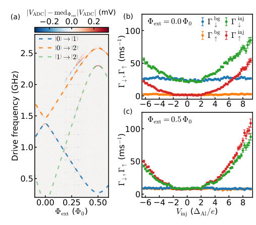
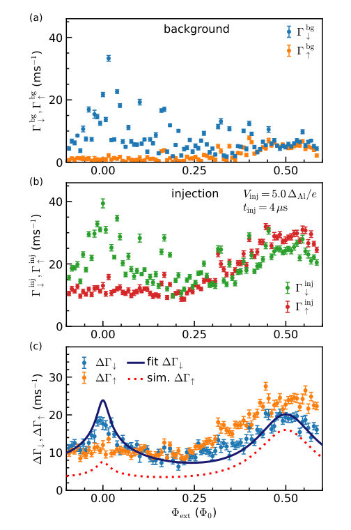
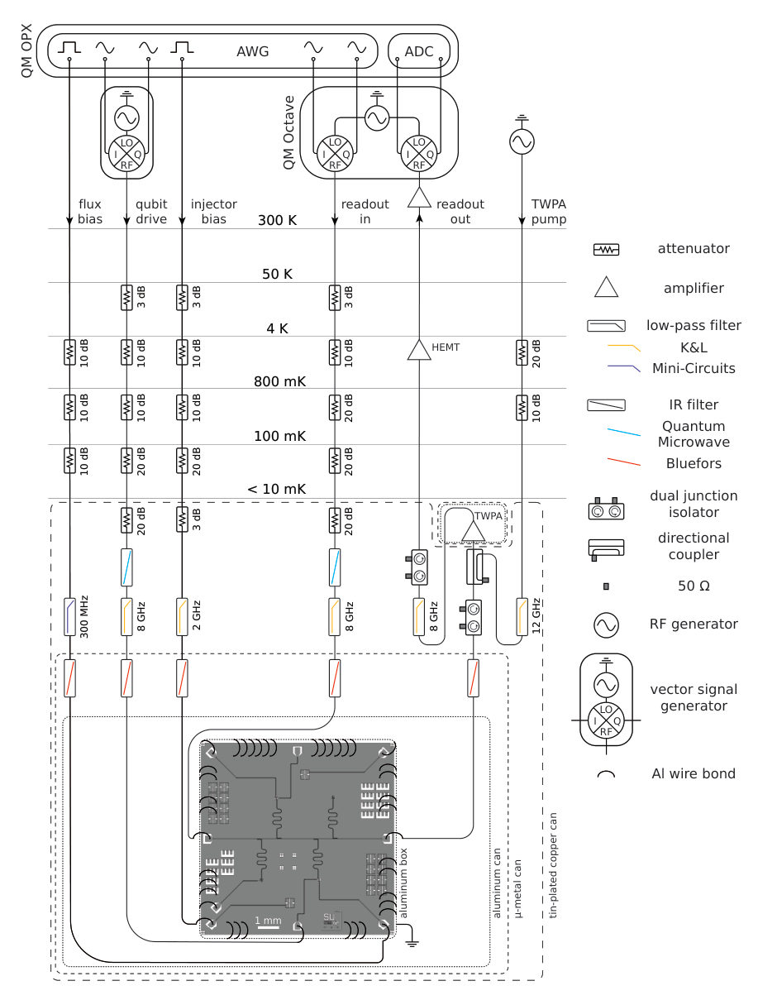
Summary. This paper investigates how quasiparticle tunneling causes decoherence in fluxonium qubits. The authors overcome the challenge of charge insensitivity by measuring excitation and de-excitation rates under controlled QP injection. They show that incorporating superconducting gap asymmetry ($\delta\Delta$) into the theory is necessary to reconcile experimental measurements with theoretical predictions regarding the relative contributions of different junction elements.
Why it may be interesting. This work directly addresses decoherence mechanisms in superconducting qubits by providing a detailed physical mechanism (gap asymmetry) that can be engineered to suppress environmental noise sources like quasiparticles, which is crucial for scaling quantum processors.
Main problem. The primary challenge is isolating and quantifying quasiparticle (QP)-induced decoherence effects in fluxonium qubits, a platform difficult to analyze because it lacks the charge sensitivity of transmon qubits.
Main result. By incorporating superconducting gap asymmetry ($\delta\Delta$) into the theoretical model, the authors reconcile discrepancies between previously inferred QP densities from different circuit elements (junction array vs. small junction).
Method. The study combines controlled on-chip quasiparticle injection experiments with detailed theoretical modeling of transition rates derived from the qubit Hamiltonian.
Model / system. The system is a fluxonium qubit, modeled by an anharmonic Josephson junction circuit. The analysis focuses on how QP tunneling affects energy relaxation ($\Gamma_{\downarrow}$) and excitation ($\Gamma_{\uparrow}$) rates as a function of external magnetic flux bias.
Key observables. QP-induced energy relaxation/excitation rates ($\Delta\Gamma_{\downarrow}$), the dependence of these rates on external magnetic flux ($\Phi_{ ext{ext}}$), and the relative contributions from the junction array and small junction.
Important parameters / regimes. Superconducting gap asymmetry ($\delta\Delta$), characteristic QP energy width ($\delta E_{ ext{qp}}$), and operating regimes like Integer/Half-Integer Flux Quantum ($ ext{IFQ}/ ext{HFQ}$).
Assumptions / limitations. The analysis requires accounting for the superconducting gap asymmetry across Josephson junctions to accurately model flux dependence, contradicting previous simplifying assumptions.
Figures summary. Figures illustrate the external flux dependence of transition rates, comparing background vs. post-injection measurements at IFQ and HFQ, demonstrating how $\delta\Delta$ affects rate suppression.
Paper structure. The paper first establishes the difficulty in measuring QP effects in fluxonium. It then develops a theoretical framework to separate contributions from different junction elements using measured transition rates ($\Gamma_{if}$). Finally, it uses experimental measurements across varying magnetic fluxes to constrain the relative roles of these components.
Quasiparticles are a prominent decoherence source in superconducting qubits, but their effects are notoriously difficult to isolate in fluxonium. Unlike a transmon, fluxonium is insensitive to offset charge, precluding charge-parity detection of quasiparticle tunneling. We address this challenge by measuring the excitation and de-excitation rates in a fluxonium qubit under controlled on-chip quasiparticle injection. We show that to accurately model the external magnetic flux dependence of the quasiparticle-induced transition rates, it is necessary to account for the superconducting gap asymmetry across the Josephson junctions. A comparison between theory and experiment constrains the relative quasiparticle contributions of the junction array and the small junction and helps explain previously reported discrepancies between the bounds on the quasiparticle densities inferred for these two circuit elements.
Authors: Ayelet Hasson, Gal Dekel, Ehud Shahar, Nitzan Akerman, Roee Ozeri
Type: theory · Category: other · PDF: https://arxiv.org/pdf/2607.20998v1
Analysis basis: full PDF text, analyzed in chunks
Topic relevance: 🔥 Rydberg arrays 4/5 · QC/QI experiment 2/5 · analog quantum simulation 1/5


Summary. The authors propose using an optically trapped neutral atom as a controllable interface between two trapped ions. By exciting the atom to a high-lying Rydberg state, they induce a large, state-dependent shift in the collective motional modes of the ion crystal. This controlled modification allows the neutral atom's internal state to deterministically control whether or how an entangling gate operates between the two ions.
Why it may be interesting. This work provides a detailed theoretical roadmap for realizing complex quantum gates in hybrid systems by leveraging highly tunable, strong long-range interactions mediated by Rydberg states, which is central to modern AMO research.
Main problem. The paper proposes a method to create deterministic, state-dependent quantum gates by engineering an interaction between neutral atoms and trapped ions.
Main result. By exciting the neutral atom to a Rydberg state, its large polarizability strongly shifts the collective motional modes of the ion crystal, enabling the atom's internal state to control an entangling gate (MS gate) between two ions.
Method. The analysis involves calculating the modification of the system's potential energy and subsequently diagonalizing the resulting coupled harmonic oscillator Hamiltonian to find frequency shifts.
Model / system. The physical platform is a hybrid quantum system combining individually trapped neutral atoms (e.g., $^{88} ext{Sr}$) in optical tweezers with a small crystal of trapped ions ($^{88} ext{Sr}^+$) in a Paul trap.
Key observables. Relative frequency shift of the Center-of-Mass (COM) motional mode, and the resulting fidelity/suppression of the Mølmer–Sørensen gate operation.
Important parameters / regimes. Rydberg principal quantum number ($n$), atomic polarizability ($\alpha$), trapping frequencies ($ u_I \approx 1 ext{ MHz}$, $ u_A \approx 300 ext{ kHz}$), and the magic wavelength for stable trapping.
Assumptions / limitations. The analysis relies on the dipole approximation for interactions ($r_E, r_r \ll 1$) and assumes that thermal effects can be modeled by fitting numerical solutions to low-order polynomials.
Figures summary. Figure 1 shows how the COM motional mode frequency shift increases with Rydberg principal quantum number $n$. Figure 2 compares MS gate dynamics when the ion frequency is shifted versus unshifted. Figure 3 illustrates the proposed experimental setup and energy levels.
Paper structure. The paper first establishes the physical model using a combined potential energy function, analyzes the resulting coupled harmonic oscillator dynamics to find motional shifts, demonstrates how these shifts enable conditional control over an MS gate, and finally validates the underlying approximations (dipole approximation, temperature effects) against realistic parameters.
Hybrid quantum systems combining neutral atoms and trapped ions offer the prospect of integrating the scalability of atom arrays with the high-fidelity control available in trapped-ion platforms. Here we propose and analyze a quantum interface between individually trapped neutral atoms and a trapped-ion crystal. In our scheme, a neutral 88Sr atom trapped in optical tweezers interacts with a small 88Sr+ ion crystal, and by exciting the atom to a Rydberg state, the atom-ion polarization interaction is strongly enhanced, resulting in a state-dependent modification of the ions' collective motional modes. We show that this shift enables conditional control of a MS gate, allowing the neutral atom to act as a control qubit for an entangling operation between two ions. We investigate the feasibility of the scheme by analyzing Rydberg trapping in the combined optical tweezers and Paul trap potentials, identifying negative-polarizability Rydberg states as particularly favorable for stable confinement. We further evaluate the relevant trapping conditions, Rydberg lifetimes, and coherence requirements, and show that the proposed interface is compatible with realistic experimental parameters. These results establish a practical route toward deterministic atom-ion hybrid quantum gates and quantum interfaces.
Authors: Michal Vyvlecka, Raphael Joos, Benjamin Breiholz, Emma Marmasse, Anna Friederike Köhler, Ponraj Vijayan, Tobias Huber-Loyola, Sven Höfling, Michael Jetter, Simone Luca Portalupi, Peter Michler
Type: experiment · Category: quantum information and computing · PDF: https://arxiv.org/pdf/2607.21454v1
Analysis basis: full PDF text, analyzed in chunks
Topic relevance: 🔥 quantum optics experiment 4/5 · QC/QI experiment 1/5 · entanglement & information structure 1/5 · interference shaping light 1/5
Summary. The research presents the development and testing of a compact, transportable source using semiconductor quantum dots to generate single and entangled photons directly at telecom C-band wavelengths. By integrating complex optical components into a field-ready rack, the authors demonstrate a major step toward realizing practical quantum internet infrastructure for secure communication.
Why it may be interesting. This work is highly relevant to open quantum systems and quantum optics as it provides a concrete, scalable hardware platform for generating entangled photons necessary for quantum networking protocols like QKD.
Main problem. The primary challenge is transitioning quantum light sources from controlled laboratory settings into practical, field-deployable systems for quantum communication networks.
Main result. The authors demonstrated a compact, transportable source capable of emitting single and polarization-entangled photons at the telecom C-band with high efficiency and record coincidence rates.
Method. They utilized semiconductor Quantum Dots (QDs) embedded in an optimized, rack-based setup that integrates multiple excitation lasers and optical components for field operation.
Model / system. The system uses InAs/GaAs quantum dots grown on a metamorphic buffer layer, engineered to emit at telecom wavelengths. The source can be excited via various schemes, including LA-phonon-assisted or two-photon excitation (TPE), allowing control over single and entangled photon generation.
Key observables. Second-order correlation function ($g^{(2)}(0)$) confirming single-photon nature; high coincidence rates ($\sim 201 ext{ kcps}$); entanglement fidelity ($\ge 0.964$); and calculated Secure Key Rates (SKR).
Important parameters / regimes. Operation at telecom C-band wavelengths; achieving $>50\%$ transmission efficiency; maintaining low multi-photon probability ($g^{(2)}(0) \ll 1$).
Assumptions / limitations. The setup assumes the ability to integrate multiple complex laser sources and remote control mechanisms into a portable unit for field use.
Figures summary. Figures illustrate the physical layout of the transportable source (color-coded floors), spectral measurements confirming excitation suppression, and characterization plots showing correlation functions and density matrices for entangled pairs.
Paper structure. The paper details the development of a state-of-the-art, compact hardware platform. It presents experimental results validating single-photon purity ($g^{(2)}$) and high-fidelity entanglement generation at telecom wavelengths, culminating in demonstrations of long-distance quantum key distribution potential.
For quantum light sources in everyday telecommunication networks, quantum science needs to be fully transformed into quantum technology. The first necessary step to move outside a well-controlled lab environment requires the use of quantum light sources operating in the technologically relevant telecom O- and C-band. This can be provided using epitaxial quantum dots as deterministic sources of quantum light. Particularly intriguing is that emitters operating at telecom wavelengths are rapidly catching up with their short wavelength counterparts in terms of performances. Here, we make a decisive step forward in the development of quantum communication networks: a state-of-the-art source of quantum light, a semiconductor quantum dot (QD), with record coincidence rate for entangled photon emission in the telecom C-band, is operated inside an optimized rack-based setup. This setup includes a tunable pulsed laser for the QD excitation (from quasi- to fully resonant excitation), all optics for the excitation filtering, and QD signal coupling into single-mode fibers. Overall, the setup allows for above $50\%$ transmission for both exciton and biexciton photons. These results show that quantum dots-based telecom light sources can now be transported and integrated into existing fiber infrastructures, an important step to demonstrate the feasibility of the upcoming quantum internet.
Authors: Jacob Beckey, Fernando Granha Jeronimo, Pei Wu
Type: theory · Category: quantum information and computing · PDF: https://arxiv.org/pdf/2607.21477v1
Analysis basis: full PDF text, analyzed in chunks
Topic relevance: 🔥 entanglement & information structure 4/5 · quantum measurements 2/5

Summary. This paper rigorously determines the exact worst-case acceptance probability curve for the product test, a crucial tool in quantum property testing. By solving a complex optimization problem related to state overlaps, the authors provide an explicit formula $\mathrm{PT}_n(\omega)$ that resolves open questions regarding low-overlap regimes. This has direct implications for understanding entanglement and improving complexity bounds in quantum computation theory.
Why it may be interesting. This work provides fundamental mathematical tools for characterizing entanglement structure in multipartite quantum systems by precisely quantifying how easily a state can be distinguished from a product state using local measurements.
Main problem. The primary goal is determining the exact worst-case acceptance probability curve for the product test, which verifies if a multipartite quantum state is unentangled across a specified tensor decomposition.
Main result. The authors derive an explicit, piecewise quadratic formula for this acceptance probability, $\mathrm{PT}_n(\omega)$, resolving previously unknown low-overlap regimes and confirming the limit $\lim_{\omega o 0} \mathrm{PT}_n(\omega) = 1/2$.
Method. The problem is mathematically reduced to a constrained optimization problem involving maximizing squared overlaps (a capped-simplex problem), whose solution dictates the exact functional form of the acceptance probability.
Model / system. The study concerns pure multipartite quantum states $|\psi angle$ residing in a tensor product Hilbert space $H_1 \otimes \cdots \otimes H_n$. The test itself is defined by local measurements (independent SWAP tests) applied to two copies of the state.
Key observables. The key observable is $\mathrm{PT}_n(\omega)$, the worst-case acceptance probability, which depends on $\omega$, the maximum squared overlap with any product state.
Important parameters / regimes. Key parameters include $n$ (number of parties), $\omega \in (0, 1]$ (the product overlap measure), and derived quantities like $m = \lfloor 1/\omega floor$.
Assumptions / limitations. The analysis assumes the validity of relating the general case to the bipartite ($n=2$) scenario for determining the worst-case bound.
Figures summary. Figure 2 plots the derived exact curve, showing agreement with known bounds ($\omega \ge 1/2$) and providing continuous extensions into low-overlap regimes. Figure 3 illustrates the optimization structure using a capped-simplex visualization.
Paper structure. The paper first establishes the problem context by defining the product test and its relation to quantum property testing. It then develops the mathematical machinery by reducing it to an optimal resource allocation (capped-simplex) problem, deriving the exact formula for $\mathrm{PT}_n(\omega)$, and finally applying this result to improve bounds in complexity theory reductions (e.g., Harrow-Montanaro reduction).
Product testing, i.e., deciding whether a pure multipartite quantum state is fully unentangled across a specified tensor decomposition, serves as a bridge between quantum property testing, unentangled quantum proof systems, and tensor optimization. Despite being a fundamental property testing task and having many applications, the product test's exact (worst-case) acceptance probability curve has yet to be fully determined. In this work, we determine this curve exactly. Let $ω$ be the maximum squared overlap of the input with a product state, and let $\mathrm{PT}_n(ω)$ be the largest possible acceptance probability of the product test over all $n$-partite pure states with product overlap $ω$, allowing arbitrary finite local dimensions. We prove that, for every $n\ge 2 $ and every $ω\in(0,1] $, $$ \mathrm{PT}_n(ω)=\frac12\left(1+mω^2+(1-mω)^2\right), $$ where $m=\lfloor1/ω\rfloor $. The formula recovers the previously known tight section of the curve for $ω\ge 1/2 $, resolves all low-overlap regimes $ω<1/2 $, and implies $\mathrm{PT}_n(ω)\to 1/2 $ as $ω\to 0$ answering an open problem in [Soleimanifar and Wright, SODA 2022]. As a complexity-theoretic application, our results improve the one-shot soundness parameter in the Harrow-Montanaro reduction from $\mathsf{QMA}(k)$ to $\mathsf{QMA}(2)$. Our techniques, built upon those of Soleimanifar and Wright, allow us to resolve these open questions while remaining surprisingly elementary.
Authors: Mousumi Kundu, Ashish Kumar Patra, Anurag K. S. V., Ruchika Bhat, Sai Shankar P., Alok Shukla, Jaiganesh G
Type: both · Category: quantum information and computing · PDF: https://arxiv.org/pdf/2607.20943v1
Analysis basis: full PDF text, analyzed in chunks
Topic relevance: 🔥 QC/QI experiment 4/5 · methods for driven-dissipative 1/5
Summary. The paper tackles the challenge of running resource-intensive Quantum Phase Estimation (QPE) algorithms on noisy quantum hardware. It proposes an innovative variational surrogate that trains a shallow circuit to mimic QPE's measurement statistics using an analytical target calculation. This approach successfully recovers molecular ground-state energies with chemical accuracy, establishing a scalable paradigm for near-term quantum chemistry simulations.
Why it may be interesting. This work provides a concrete, scalable blueprint for quantum chemistry simulations on near-term devices by replacing exponentially deep circuits with shallow, trainable variational models whose training target is derived analytically from exact theory.
Main problem. Standard Quantum Phase Estimation (QPE) circuits are too deep for current Noisy Intermediate-Scale Quantum (NISQ) hardware, making molecular energy estimation impractical.
Main result. The authors developed a variational surrogate framework that faithfully mimics QPE by training a shallow VQC to reproduce the measurement distribution using an analytically derived target, achieving chemical accuracy on real hardware.
Method. They train a Variational Quantum Circuit (VQC) whose parameters are optimized to match a classically computed target probability distribution derived from the Dirichlet kernel, bypassing full quantum circuit simulation.
Model / system. The method is applied to molecular ground-state energy estimation using the hydrogen molecule ($ ext{H}_2$) Hamiltonian. The experimental platform involves superconducting qubits on IBM Quantum hardware.
Key observables. Molecular ground-state energy ($E$), QPE measurement probability distribution, and agreement metrics (Hellinger distance, TVD).
Important parameters / regimes. VQC depth ($p=1$ to $5$), circuit topology (linear vs. full entangler), and Dynamical Decoupling sequence application.
Assumptions / limitations. The method assumes the true ground-state energy is known classically to generate the training target, and it relies on the VQC being shallow enough to outperform noise accumulation from deep circuits.
Figures summary. Figure A1 compares dominant bitstring counts for QPE at depths $p=8$ and $p=64$, showing that while a linear entangler is optimal, Dynamical Decoupling degrades performance compared to the non-DD baseline at moderate depth.
Paper structure. The paper first introduces the limitations of standard QPE on NISQ devices. It then details the analytically grounded variational surrogate framework using the Dirichlet kernel as the training target. The core work involves a multi-stage experimental investigation comparing topologies, varying VQC depths, and analyzing noise robustness on real hardware.
Quantum Phase Estimation (QPE) is a foundational algorithm for molecular ground-state energy estimation, but its deep circuit requirements make direct hardware execution impractical on Noisy Intermediate-Scale Quantum (NISQ) devices. We present an analytically grounded variational surrogate framework in which a shallow Variational Quantum Circuit (VQC) is trained to reproduce the QPE measurement distribution without any quantum circuit simulation. The training target is computed entirely classically via the Dirichlet kernel, evaluated directly from the Full Configuration Interaction (FCI) ground-state energy, the ancilla qubit count, and the time evolution parameter, eliminating the exponentially scaling simulation bottleneck of prior surrogate approaches. We apply this framework to the hydrogen molecule (H$_2$) with a symmetry-tapered Hamiltonian, conducting a four-stage experimental investigation on IBM Quantum hardware. Stage 1 compares linear and full entangler topologies for the $R_Y$-$R_Z$-$CZ$ ansatz, with and without XpXm Dynamical Decoupling (DD), across four distributional metrics (Hellinger distance, fidelity error, total variation distance, Jensen-Shannon divergence), identifying the linear entangler as optimal. Stage 2 varies VQC layers ($p=1$ to $5$) for the linear-entangler ansatz, identifying single-layer depth as optimal under hardware noise. Stage 3 applies this configuration to the reduced $R_Y$-$CZ$ ansatz, comparing ideal and noisy simulator-trained parameters. A supplementary noise analysis at $p \in \{8,64\}$ characterizes the depth-dependent interplay between circuit depth and DD effectiveness. The framework enables faithful QPE mimicry using a linearly scaling VQC, recovering the ground-state energy within the chemical accuracy threshold (1 kcal/mol), constituting a scalable, hardware-efficient paradigm for QPE-based molecular energy estimation on NISQ devices.
Authors: Igor Prlina
Type: theory · Category: other · PDF: https://arxiv.org/pdf/2607.20647v1
Analysis basis: full PDF text, analyzed in chunks
Topic relevance: 🔥 quantum measurements 4/5 · measurement-induced transitions 1/5
Summary. This paper explores the possibility of detecting hidden nonlinearities in quantum mechanics that are masked by fundamental time averaging. By employing weak postselected measurements and a specific toy model, the authors demonstrate that these high-frequency modes leave a detectable signature—a sharp sign flip—in the time-averaged weak value.
Why it may be interesting. This work provides a theoretical mechanism showing how non-standard quantum effects (high-frequency nonlinearity) might be probed using advanced measurement techniques (weak measurements) even when standard methods fail due to averaging assumptions.
Main problem. The work investigates whether nonlinear modifications of quantum mechanics, particularly those manifesting only as high-frequency modes beyond a fundamental temporal resolution ($ au$), can evade detection by standard strong measurements.
Main result. Even when designed to hide nonlinearity from strong time averaging, weak postselected measurements can still detect these hidden high-frequency modes via a characteristic discontinuous sign flip in the time-averaged weak value.
Method. The analysis employs weak postselected measurements and applies a 'temporal indistinguishability postulate' (TIP) which mandates amplitude averaging over fundamental time intervals ($ au$).
Model / system. A handcrafted nonlinear toy model is used, involving a two-level system whose evolution Hamiltonian ($H_q$) contains high-frequency components ($H_{hf}$). The nonlinearity is designed to be invisible under standard strong measurements.
Key observables. The time-averaged weak value $(\sigma_z)_w$ of the $\sigma_z$ observable, which exhibits a discontinuous sign flip at specific parameter ratios.
Important parameters / regimes. Three crucial scales are compared: experimental clock resolution ($\Delta t_{\exp}$), fundamental indistinguishability scale ($ au$), and the high-frequency mode period ($\Omega^{-1}$).
Assumptions / limitations. The analysis assumes the existence of a fundamental time scale $ au$ (TIP) and relies on using a specific, handcrafted nonlinear toy model.
Paper structure. The paper progresses by first defining the problem concerning nonlinearity evasion, then introducing the TIP and the weak measurement framework. The core is the calculation of the time-averaged weak value via contour integration, leading to the identification of the sign-flipping transition condition that signals hidden nonlinearities.
In this work we study whether nonlinear models of quantum mechanics can avoid detection by strong measurements, if the nonlinear effects only exist as high frequency modes. A potential physical process which could hide such modes would be amplitude level time averaging over fundamentally indistinguishable times. To that end, we have defined a temporal indistinguishability postulate which describes the averaging process, and handcrafted a nonlinear toy model well suited to avoid detection. We have demonstrated that even in such an ideal setup, tabletop weak postselected measurements can still detect nonlinear behavior and put constraints on nonlinear high frequency modes of evolution, even at frequencies beyond fundamental minimal temporal resolution.
Authors: Jinshi Fu, Li Gao, Sang-Jun Park
Type: theory · Category: quantum information and computing · PDF: https://arxiv.org/pdf/2607.21367v1
Analysis basis: full PDF text, analyzed in chunks
Topic relevance: 🔥 entanglement & information structure 4/5
Summary. This paper resolves the long-standing question regarding the 2-copy distillability of Werner states by proving that their 2-copy threshold matches their 1-copy threshold. Using advanced operator theory, it precisely characterizes the entanglement properties of these mixed states, providing a significant result in quantum information theory.
Why it may be interesting. While focused on abstract quantum information theory, understanding entanglement thresholds like this is crucial for designing robust quantum communication protocols and characterizing resource states in quantum computation.
Main problem. The paper addresses the fundamental question of determining the 2-copy distillability threshold for Werner states, which is a key step toward solving whether all Non-Positive Partial Transpose (NPT) states are distillable.
Main result. It proves that for Werner states in arbitrary dimension, being 2-copy distillable is equivalent to being 1-copy distillable. This establishes the exact threshold for this specific class of entangled states.
Method. The proof relies on advanced mathematical techniques involving geometric estimates, block-operator analysis, and establishing necessary and sufficient conditions through operator inequalities derived from partial transposes.
Model / system. The system analyzed is bipartite quantum states, specifically the Werner state $ ho_\alpha$, parameterized by $\alpha$. The theory uses concepts like entanglement distillation via LOCC on tensor products of these states.
Key observables. The primary observable is the distillability condition, tested by analyzing expectation values involving operators like $Q = \Pi(13)_A \otimes \Pi(24)_A$ and their norms.
Important parameters / regimes. The key parameters are the state parameter $\alpha$, which dictates entanglement strength, and the number of copies ($r=1$ vs $r=2$).
Assumptions / limitations. The analysis assumes the validity of using twirling arguments to reduce the general problem to the Werner state family. It notes that higher-copy distillability ($r \ge 3$) remains open.
Figures summary. Figure 1 provides a graphical proof illustrating an equation related to the distillability condition using tensor diagram notation.
Paper structure. The paper progresses by first defining the problem in terms of LOCC and partial transposes, then employing symmetry arguments (Lemma 2.3) to bound certain operator norms, followed by establishing equivalence conditions (Lemma 3.1) that lead to the final characterization of the distillability threshold.
Entanglement distillation is a fundamental task in quantum information theory. In this work, we prove that Werner states in arbitrary dimension are 2-copy distillable if and only if they are 1-copy distillable. This answers the longstanding open question of the 2-copy distillability of Werner states. This is an important step on determining whether every non-positive partial transpose (NPT) state is distillable, which remains one of the central open problems in the field of entanglement distillation.
Authors: Fatih Ozaydin, Haydar Sahin, Armando Perez-Leija, Azmi Ali Altintas, Cihan Bayindir, Ozgur E. Mustecaplioglu, Sahin K. Ozdemir
Type: theory · Category: other · PDF: https://arxiv.org/pdf/2607.21299v1
Analysis basis: full PDF text, analyzed in chunks
Topic relevance: Tavis-Cummings & cavity-many-emitter 3/5 · analog quantum simulation 3/5 · correlated cavity matter 3/5 · driven-dissipative phase transition 3/5 · methods for driven-dissipative 3/5 · non-equilibrium dynamics 3/5 · correlated / nonlocal dissipation 2/5 · entanglement & information structure 2/5 · non-equilibrium universality 2/5 · scars & prethermalization 2/5 · Frenkel-Kontorova 1/5 · Keldysh / 2PI / non-Gaussian methods 1/5 · Kondo & dissipative impurity 1/5 · exotic spin models in light-matter 1/5 · quantum measurements 1/5 · quantum optics experiment 1/5
Summary. The paper establishes that the topological nature of a quantum fuel, derived from an SSH chain, dictates whether the coupled cavity system undergoes pure thermalization or exhibits coherent work extraction. By measuring coherence indicators like squeezing and displacement, the authors show this edge-bulk dichotomy is robust against realistic noise and disorder, establishing a fundamental link between topology and thermodynamics.
Why it may be interesting. This work provides an operational quantum resource concept—using topology to engineer specific thermodynamic behaviors (pure heat vs. extractable work)—which is highly relevant for designing next-generation quantum engines and energy transducers.
Main problem. The research aims to determine if quantum topology can fundamentally control the distinction between heat-like (purely thermal) and work-like (coherent) energy resources in open, interacting quantum systems.
Main result. Topological edge states act as robust 'pure-thermalization fuels,' suppressing coherent excitations, while bulk eigenstates activate these channels, demonstrating a clear topology-thermodynamics link.
Method. The authors analyze the steady-state response of a cavity coupled to an SSH chain fuel source by measuring coherence indicators derived from homodyne readout.
Model / system. The system uses an open Su-Schrieffer-Heeger (SSH) chain as a quantum fuel for a micromaser, modeled via coupling to a cavity mode. The dynamics are analyzed using master equations and involve mapping lattice eigenstates onto a small qubit register.
Key observables. Squeezing ($\xi$) and displacement ($\lambda$) indicators derived from field quadratures ($X$ and $P$), used to distinguish between pure thermalization ($\lambda \approx \xi \approx 0$) and coherent response.
Important parameters / regimes. The dimerization ratio ($t_1/t_2$) is crucial for tuning the system into topological regimes. Robustness tests include decoherence (phase-damping, depolarizing) and disorder levels (up to 5%).
Assumptions / limitations. The analysis assumes that the fuel state can be unitarily compressed onto a finite qubit register while preserving its essential topological information.
Figures summary. Figures demonstrate that for SSH fuels, edge states maintain vanishing $\lambda$ and $\xi$ in the topological phase, whereas bulk states show non-zero values. These results are shown to persist under various noise models and are absent in topologically trivial lattices.
Paper structure. The paper establishes the theoretical framework by defining the edge/bulk dichotomy using SSH chains coupled to a cavity. It then rigorously tests this classification's robustness against realistic decoherence channels, culminating in comparisons with non-topological lattice models.
Repeated-interaction machines distinguish heat-like from work-like resources through the steady states they generate, but whether topology can control this distinction remains unknown. Here we reveal the role of topology in the process by showing that topological edge states can act as pure-thermalization fuels. For an open Su-Schrieffer-Heeger chain used as the fuel source of a micromaser, edge eigenstates suppress both displacement and squeezing and drive the cavity to a Gibbs state, whereas bulk eigenstates activate coherent channels and yield thermo-mechanical operation. This edge-bulk thermodynamic dichotomy remains robust under realistic decoherence, cavity loss, bond disorder, and moderate onsite disorder. We further design a superconducting implementation in which a sixteen-site SSH eigenstate is deterministically compressed into a four-qubit fuel register. The resulting cavity response provides a transport-free classifier of topology and identifies a topology-thermodynamics link that extends beyond cavity-QED to repeated-interaction settings more generally.
Authors: Hongliang Wu, Zhengtao Wang, Yuchen Han, Liu Yang, Zhiwei Wang, Yeliang Wang, Dezhi Zheng, Bo Zhang, Jun Zhang
Type: experiment · Category: other · PDF: https://arxiv.org/pdf/2607.21002v1
Analysis basis: full PDF text, analyzed in chunks
Topic relevance: quantum measurements 3/5 · quantum optics experiment 3/5 · spintronics-quantum-optics interface 3/5 · QC/QI experiment 2/5 · Tavis-Cummings & cavity-many-emitter 2/5 · correlated cavity matter 2/5 · driven-dissipative phase transition 2/5 · exotic spin models in light-matter 2/5 · analog quantum simulation 1/5 · measurement-induced transitions 1/5 · methods for driven-dissipative 1/5 · non-equilibrium dynamics 1/5 · superradiant laser 1/5
Summary. The research presents the first on-chip radio-frequency maser using optically pumped pentacene at room temperature. By integrating the gain medium into a compact LC resonator and implementing active feedback control over the circuit's quality factor, the authors achieved stable microwave emission and demonstrated ultra-sensitive magnetic field detection ($\sim 10 ext{ fT}/\sqrt{ ext{Hz}}$). This establishes a highly integrated platform for portable quantum sensing.
Why it may be interesting. This work directly addresses solid-state quantum emitters for microwave detection. The ability to integrate the gain medium into a chip-scale resonator while actively tuning its coupling strength ($Q_L$) is highly relevant for building portable, high-performance quantum sensors that bridge fundamental physics with practical engineering.
Main problem. To develop a highly integrated, room-temperature solid-state maser operating at radio frequencies (RF) for applications like ultra-sensitive microwave magnetic-field detection.
Main result. The authors demonstrated the first on-chip RF maser using pentacene, achieving stimulated emission at 106.62 MHz and reaching a magnetic-field sensitivity of $\sim 10 ext{ fT}/\sqrt{ ext{Hz}}$.
Method. They utilized an optically pumped system within a compact on-chip LC resonant circuit, employing active feedback control to tune the resonator's quality factor ($Q_L$) between oscillator and sensing regimes.
Model / system. The physical platform is pentacene doped p-terphenyl exhibiting optically pumped triplet states ($T_1$). The maser operates by exploiting the X-Y sublevel transition ($\sim 106$ MHz) within an LC resonator structure integrated on a chip, replacing bulky metallic resonators.
Key observables. Maser output signal intensity (showing $\propto \sqrt{E_{ ext{pump}}}$ dependence), stable oscillation spectra locked to the X-Y frequency, and magnetic field response ($\partial S / \partial B_1$).
Important parameters / regimes. Operating frequency of 106.62 MHz; sensitivity of $10 ext{ fT}/\sqrt{ ext{Hz}}$; tunability via controlling $Q_L$ from intrinsic ($\approx 40$) to several thousand.
Assumptions / limitations. The threshold pump energy required for low-$Q_L$ operation far exceeds the pentacene damage threshold, suggesting improving the intrinsic $Q_L$ is necessary for further development.
Figures summary. Figures illustrate the mechanism (pumping $ ightarrow T_1 ightarrow X-Y$ inversion) and the two operating regimes. Time-domain data shows signal build-up, FFT confirms stable oscillation, and plots demonstrate intensity scaling with pump energy and threshold dependence on $Q_L$.
Paper structure. The paper details the physical mechanism of optical pumping in pentacene to achieve triplet state inversion, describes the integration into an LC resonator circuit, presents experimental results showing tunable operation between maser oscillation (high $Q_L$) and sensitive sensing (low $Q_L$), and concludes with performance metrics.
Room-temperature solid-state masers offer exceptional frequency selectivity and ultra-low noise for weak-signal detection. However, their reliance on bulky metallic resonators has significantly hindered integration, miniaturization, and extension to lower frequencies. Here, we demonstrate the first on-chip radio-frequency maser operating at room temperature, exploiting optically pumped triplet states of pentacene. The device produces stimulated emission at 106.62 MHz and enables ultra-sensitive microwave magnetic-field detection with a sensitivity of ($\sim 10\,\rm{fT/\sqrt{Hz}}$), functioning simultaneously as a local oscillator and a sensor. By actively controlling microwave dissipation, we achieve efficient regulation of the maser output, revealing a key mechanism for tuning emission in open cavity-free systems. This work extends pentacene-based masers into the radio-frequency regime and establishes a highly integrated on-chip architecture for room-temperature masers, offering a new pathway toward portable quantum devices.
Authors: Rashed Aljasmi, Hisham Sati, Hichem Eleuch
Type: theory · Category: other · PDF: https://arxiv.org/pdf/2607.20688v1
Analysis basis: full PDF text, analyzed in chunks
Topic relevance: correlated cavity matter 3/5 · driven-dissipative phase transition 3/5 · methods for driven-dissipative 3/5 · analog quantum simulation 2/5 · non-equilibrium dynamics 2/5 · Keldysh / 2PI / non-Gaussian methods 1/5 · Tavis-Cummings & cavity-many-emitter 1/5 · non-equilibrium universality 1/5
Summary. The paper theoretically analyzes bistability in semiconductor microcavities operating under ultrastrong coupling. By retaining counter-rotating terms beyond the standard RWA, the authors show that while the qualitative physics remains similar to strong coupling, quantitative predictions for hysteresis loops are significantly shifted due to spectral renormalization.
Why it may be interesting. This work is highly relevant as it pushes beyond the standard Rotating Wave Approximation (RWA) in cavity QED systems, showing how fundamental quantum corrections (counter-rotating terms) alter macroscopic nonlinear phenomena like optical switching.
Main problem. The study investigates the phenomenon of optical bistability in exciton-photon microcavities when operating within the ultrastrong-coupling regime.
Main result. While the bistability retains a standard Kerr-oscillator form, the inclusion of counter-rotating processes and diamagnetic terms renormalizes the polariton spectrum, causing measurable shifts in the turning points and hysteresis window compared to predictions from the strong-coupling (RWA) limit.
Method. The analysis uses a mean-field approximation on the effective single-mode Hamiltonian derived after diagonalizing the full Hopfield-Rabi model using Bogoliubov transformations.
Model / system. The system is an exciton-photon microcavity modeled by a Hamiltonian including Rabi coupling, Kerr nonlinearity, and external driving. The dynamics are treated via a Lindblad master equation for the lower polariton branch approximation.
Key observables. Bistability (S-shaped input-output curves), polariton frequencies ($\omega_{1,2}$), effective detuning ($ ilde{\Delta}1$), and nonlinearity ($U$).}
Important parameters / regimes. Ultrastrong-coupling regime ($\eta \gtrsim 0.1$), coupling strength ($g$), and the diamagnetic term $D$.
Assumptions / limitations. The analysis assumes a weakly nonlinear regime, allowing for an effective single-mode description (lower polariton approximation), and explicitly neglects phase-space filling effects.
Figures summary. Figure 1 illustrates how the lower and upper polariton frequencies depend on the coupling strength $g$ and other parameters.
Paper structure. The paper builds from the full Hamiltonian formulation, reduces it to an effective single-mode description via polariton diagonalization, derives the semiclassical equations of motion using a mean-field approach, and finally analyzes stability criteria to map out the bistability regions.
We investigate a coherently driven exciton--photon microcavity with Kerr nonlinearity in the ultrastrong-coupling regime. When the lower and upper polariton branches are well separated in energy, the full Hopfield--Rabi--Kerr model reduces to an effective single-mode description of the lower polariton. We analyze the stability of the lower-polariton steady states. We show that the resulting bistability is qualitatively similar to that in the strong-coupling regime. However, in the ultrastrong-coupling regime counter-rotating processes and the diamagnetic $A^{2}$ term renormalize the polariton spectrum and composition, changing the effective detuning $\tildeΔ_{1}$ and nonlinearity $U_{\mathrm{LP}}$ $g$-dependency beyond the strong-coupling (RWA) picture. As a result, although the semiclassical bistability criterion keeps its standard Kerr--oscillator form, the turning points and hysteresis window are shifted relative to the strong-coupling prediction.
← Index · ← Previous · Next →